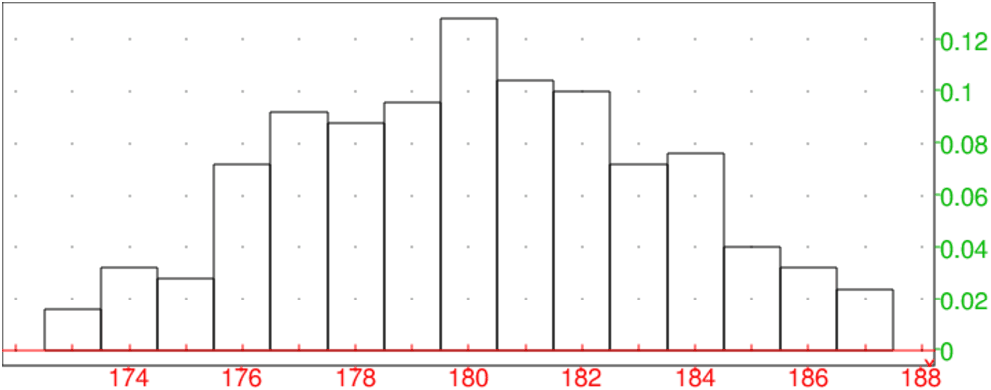
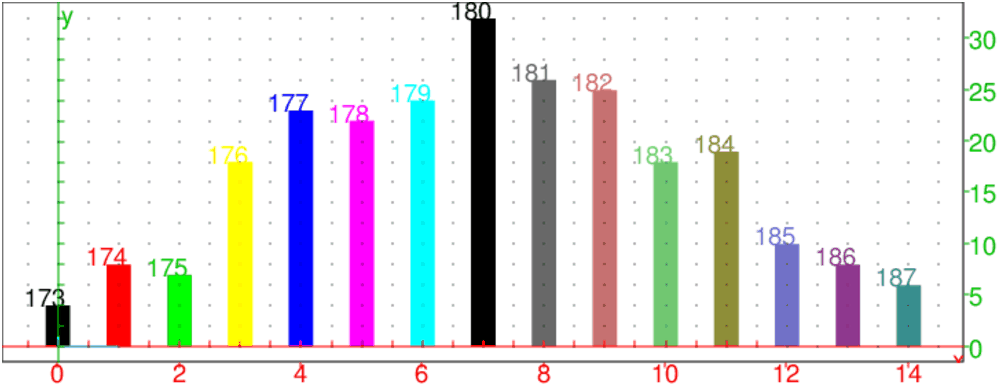
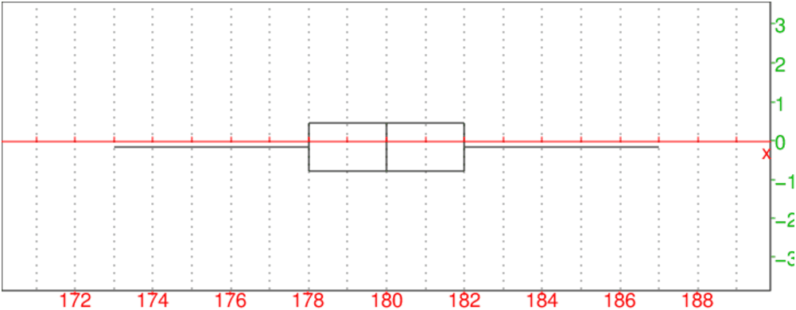
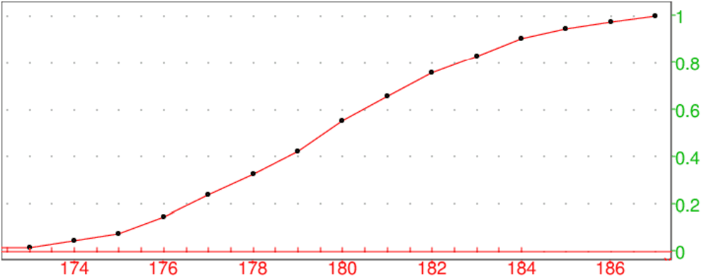
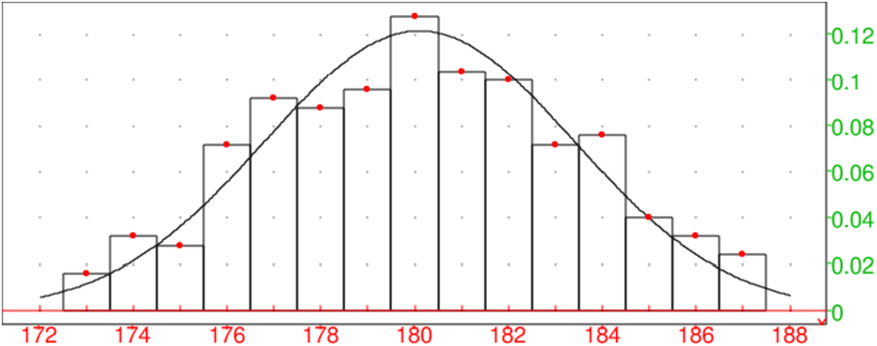
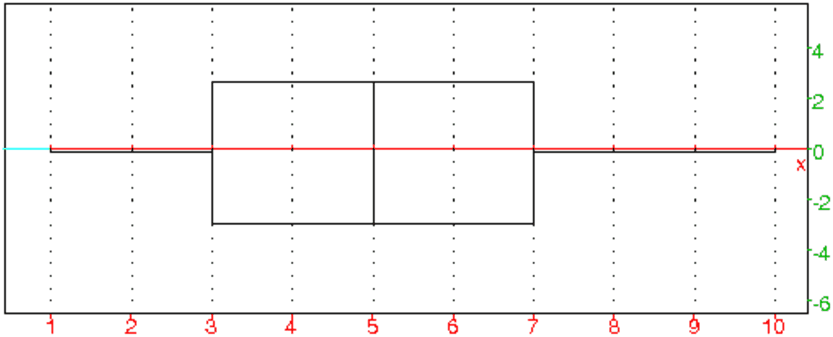

La statistique a pour objet de recueillir des observations portant sur des
sujets présentant une certaine
propriété et de traduire ces observations par des nombres qui permettent
d’avoir des renseignements sur cette propriété.
Le but de la statistique descriptive est de structurer et de représenter
l’information contenue dans les données.
La population est l’ensemble des sujets observés.
Le caractère est la propriété étudiée sur ces sujets.
Lorsque le caractère étudié est qualitatif, chaque caractère sera
indexé et pour chaque variété du caractère, on indiquera le nombres des
membres de la population ayant cette variété : c’est une
série statistique qualitative.
Exemple :
On considère comme population 100 nouveau-nés et le caractère est le
sexe.
On indexe les garçons par G et les filles par F.
La série sera par exemple :
G:63, F:37
Lorsque le caractère étudié est exprimable directement par un nombre,
l’énumération des nombres exprimant la valeur de ce caractère pour chaque
membre de la population étudiée est une
série statistique quantitative.
Exemple :
On considère comme population 20 adolescents et le caractère est la taille
exprimée en centimètres.
La série est obtenue par simple énumération :
155,147,153,154,155,148,151,162,144,159,156,156,161,154,
153,171,165,159,154,155
On obtient une série statistique d’effectifs égaux à 1.
La série sera plus lisible si on note pour chaque valeur du caractère le
nombre de personnes présentant ce caractère : on obtient une
série statistique avec effectifs.
| "taille" | "effectif" |
| 144 | 1 |
| 147 | 1 |
| 148 | 1 |
| 151 | 1 |
| 153 | 2 |
| 154 | 3 |
| 155 | 3 |
| 156 | 2 |
| 159 | 2 |
| 161 | 1 |
| 162 | 1 |
| 165 | 1 |
| 171 | 1 |
Une présentation de ce type s’impose quand la population est grande.
On peut aussi, puisque le caractère n’est discret que par convention,
utiliser des classes par exemple d’étendue 1 cm ou 2 cm pour
avoir une représentation plus globale.
On a alors en utilisant des classes d’étendue 2cm :
| "taille x" | "effectif" |
| 143.5 ≤ x< 145.5 | 1 |
| 145.5 ≤ x <147.5 | 1 |
| 147.5 ≤ x <149.5 | 1 |
| 149.5 ≤ x <151.5 | 1 |
| 151.5 ≤ x <153.5 | 2 |
| 153.5 ≤ x <155.5 | 6 |
| 155.5 ≤ x <157.5 | 2 |
| 157.5 ≤ x <159.5 | 2 |
| 159.5 ≤ x <161.5 | 1 |
| 161.5 ≤ x <163.5 | 1 |
| 163.5 ≤ x <165.5 | 1 |
| 165.5 ≤ x <167.5 | 0 |
| 167.5 ≤ x <169.5 | 0 |
| 169.5 ≤ x <171.5 | 1 |
Ainsi, la fréquence de 155 est 3/20,
et la fréquence cumulée de 155 est :(1+1+1+1+2+3+3)/20=12/20.
Exercice
Le but de l’activité est l’étude de la taille (en cm) portant sur 250
individus jouant au basket.
| Taille | 173 | 174 | 175 | 176 | 177 | 178 | 179 | 180 | 181 | 182 | 183 | 184 | 185 | 186 | 187 |
| Effectif | 4 | 8 | 7 | 18 | 23 | 22 | 24 | 32 | 26 | 25 | 18 | 19 | 10 | 8 | 6 |
L’activité commence par un calcul des paramètres statistiques puis se poursuit
avec des représentations
graphiques : diagrammes en bâtons, diagramme en boîte et polygone des fréquences cumulées croissantes.
On tape :
T:=(173+j)$(j=0..14)
On obtient :
173,174,175,176,177,178,179,180,181,182,183,184,185,186,187
On tape :
Ef:=(4 ,8 ,7, 18, 23, 22, 24, 32, 26, 25, 18, 19, 10, 8, 6)
sum(Ef)
On obtient :
250
On tape :
histogramme(tran([[T],[Ef]]))
On obtient :

On tape :
diagramme_batons([[T],[Ef]])
On obtient :

On tape :
moustache([T],[Ef])
On obtient :

On tape :
Efc:=(sum(Ef[j],j=0..k)/250.)$(k=0..size(Ef)-1)
On obtient :
0.016,0.048,0.076,0.148,0.24,0.328,0.424,0.552,0.656,0.756,0.828,0.904,0.944,0.976,1.0
On tape :
affichage(nuage_points([[T],[Efc]])), point_point+epaisseur_point_2),frequences_cumulees(tran([[T],[Ef]]))
On obtient :

On tape :
approx(mean([T],[Ef]))
On obtient :
180.104
On tape :
approx(sttdev([T],[Ef]))
On obtient :
3.27859482096
On tape :
histogramme(tran([[T],[Ef]])),
plotfunc(loi_normale(180.104,3.27859482096,x),x=172..188),
nuage_points(tran([[T],[Ef]/250.]),affichage=1+point_point+epaisseur_point_2)
On obtient :

Soit une série quantitative à 1 variable L.
La différence entre la plus grande valeur et la plus petite valeur du
caractère effectivement obtenue est l’étendue de la série L.
Le nombre de membres de la population étudiée est l’effectif total.
Si le caractère est discret, il est commode d’indiquer pour chaque valeur du
caractère, le nombre des membres de la population ayant cette valeur : c’est
l’effectif de cette valeur.
Si le caractère est continu, on partage l’intervalle sur lequel s’étendent
ces valeurs en intervalles (en général égaux) que l’on appelle
classe. Le nombre des membres de la population ayant leur valeur dans une
classe est l’effectif de cette classe.
La valeur moyenne des bornes d’une classe est le centre de cette
classe.
L’effectif cumulé d’une valeur (ou d’une classe) est la somme de
l’effectif de cette valeur (ou de cette classe) et de tous les effectifs des
valeurs (ou des classes) qui précèdent.
La fréquence d’une valeur (ou d’une classe) est le rapport de
l’effectif de cette valeur (ou de cette classe) par l’effectif total.
Avec Xcas on tape par exemple :
frequences([1,2,1,1,2,1,2,4,3,3])
On obtient ;
[[1,0.4],[2,0.3],[3,0.2],[4,0.1]]
La fréquence cumulée d’une liste de valeurs (ou d’une classe) est la
somme de la fréquence de cette valeur (ou de cette classe) et de toutes les
fréquences des valeurs (ou des classes) qui la précèdent.
Avec Xcas on tape par exemple :
frequences_cumulee([[0.75,30],[1.75,50],[2.75,20]])
ou
frequences_cumulee([[0.25..1.25,30],[1.25..2.25,50],
[2.25..3.25,20]])
On obtient le diagramme des fréquences cumulées.
L’histogramme des effectifs (resp fréquences) d’un caractère discret
ou continu est le graphique qui permet de visualiser l’effectif (resp
fréquences) des différentes valeurs du caractère : on met en abscisse les
différentes valeurs du caractère (ou le centre des différentes classes),
puis on forme des rectangles accolés deux à deux, ses rectangles ont deux
cotés parralléles à l’axe des ordonnées,
le coté porté par l’axe des abscisses a pour longueur l’amplitude de la
classe, et l’autre est tel que l’aire du rectangle est égale à l’effectif
(resp fréquences) de la valeur considérée.
L’histogramme des fréquences permet de visualiser les fréquences des
différentes classes au moyen de la surface de rectangles : chaque rectangle
correspond à une classe et a pour surface la fréquence de cette classe.
Avec Xcas on tape par exemple :
histogramme([[0.75,30],[1.75,50],[2.75,20]])
ou
histogramme([[0.25..1.25,30],[1.25..2.25,50],
[2.25..3.25,20]])
On obtient un histogramme des fréquences.
La fonction de répartition des fréquences est égale pour chaque
valeur du caractère à la fréquence cumulée de cette valeur.
Le mode est la valeur du caractère dont l’effectif est le plus grand.
Le maximum est la plus grande valeur du caractère effectivement
obtenue.
Le minimum est la plus petite valeur du caractère effectivement
obtenue.
La médiane partage la série statistique en deux groupes de même
effectif. C’est une valeur du caractère à partir de laquelle
l’effectif des valeurs qui lui sont inférieures est superieur ou ègal à
l’effectif des valeurs qui lui sont supérieures (par exemple
la médiane de [140,145,146,147] est 146 et la médiane de [140,145,146] est
145). La médiane est donc la valeur du caractère à partir de laquelle la
fréquence cumulée atteint ou dépasse 0.5.
Les quartiles sont trois valeurs du caractère qui partage la série
statistique en quatre groupes de même effectif :
- le 1-ier quartile est la valeur du caractère à partir de laquelle
la fréquence cumulée atteint ou dépasse 0.25.
- le 2-ième quartile est confondu avec la médiane.
- le 3-ième quartile est la valeur du caractère à partir de
laquelle la fréquence cumulée atteint ou dépasse 0.75.
On peut définir les déciles. Il y a 9 déciles :
le 1-ier décile est la valeur du caractère à partir de laquelle la
fréquence cumulée atteint ou dépasse 0.1.
le 2-ième décile est la valeur du caractère à partir de laquelle
la fréquence cumulée atteint ou dépasse 0.2.
etc...
le 9-ième décile est la valeur du caractère à partir de laquelle
la fréquence cumulée atteint ou dépasse 0.9.
On peut aussi définir le centile (il y a 99 centiles) et le
quantile d’ordre p :
le 1-ier centile est la valeur du caractère à partir de laquelle la
fréquence cumulée atteint ou dépasse 0.01.
etc...
le 99-ième centile est la valeur du caractère à partir de laquelle
la fréquence cumulée atteint ou dépasse 0.99.
Le quantile d’ordre p (p un réel de [0,1[), est la valeur
du caractère à partir de laquelle la fréquence cumulée atteint ou
dépasse p.
Le semi-interquartile est égal à 1/2(Q3−Q1) où
Q1 et Q3 désigne le premier et le troisième quartile. Cet indice
fournit un renseignement sur l’étalement des valeurs de part et d’autre de la
médiane.
L’interquartile est égal à Q3−Q1 où
Q1 et Q3 désigne le premier et le troisième quartile. Cet indice
fournit un renseignement sur l’étalement des valeurs de part et d’autre de la
médiane.
L’interdécile est égal à D9−D1 où
D1 et D9 désigne le premier et le neuvième décile. Cet indice
fournit un renseignement sur l’étalement des valeurs de part et
d’autre de la médiane.
Exemples avec Xcas
On tape :
L:=[1,2,3,4,5,6,7,8,9,10]
min(L) et on obtient 1
quartile1(L) et on obtient 3.0
median(L) et on obtient 5.0
quartile3(L) et on obtient 8.0
max(L) et on obtient 10
quartiles(L) pour avoir le résultat des 5 commandes précédentes
et on obtient [[1.0],[3.0],[5.0],[8.0],[10.0]]
quantile(L,0.9) et on obtient 9.0
La boite à moustaches
permet de visualiser ces différentes valeurs :
c’est un rectangle dont un coté est un trait allant de Q1 à Q3 sur
lequelle un trait vertical indique la valeur de la médiane et d’où
deux traits horizontaux (les moustaches) débordent : l’un va de la valeur
minimum à Q1 et l’autre de Q3 à la valeur maximum.
Sur ces deux moustaches, on trouvent quelquefois deux traits verticaux
indiquant la valeur du premier et du neuvième décile.
Avec Xcas on tape :
L:=[1,2,3,4,5,6,7,8,9,10]
moustache(L)
Cela ouvre le graphique et dessine une boite à moustaches où on peut
lire que :
Q2=médiane=5, Q1=3, Q3=8, minimum=1, maximum=10.

La moyenne est le quotient de la somme des valeurs du caractère (pas
toujours distinctes) par l’effectif total.
Si le caractère prend n valeurs distinctes xk d’effectifs ek pour
k=0...(n−1) alors l’effectif total vaut N=∑k=0n−1 ek et
la moyenne m est :
m=1/N∑k=0n−1 ekxk.
La variance est la moyenne des carrés des écarts à la moyenne des
valeurs du caractère.
Si le caractère prend n valeurs distinctes xk d’effectifs ek
(k=0...(n−1)), si la moyenne vaut m et, si l’effectif total vaut N alors
la variance v=s2 est :
s2=1/N∑k=0n−1 ek(xk−m)2=1/N(∑k=0n−1 ekxk2)−m2.
L’écart-type s est la racine carrée de la variance.
Soit une série statistique quantitative d’effectif N à 1 variable,
un échantillon d’ordre n désigne le système des n valeurs
prises par le caractère au cours de n tirages indépendants. Les valeurs
prises par l’échantillon sont donc les valeurs prises par n variables
aléatoires X1,...,Xn qui suivent la même loi que la variable
aléatoire X égale à la valeur du caractère étudié.
Par exemple, si dans une ville de N habitants, on étudie la taille
(exprimée en centimètres) de ses habitants, la taille de 100 personnes
prises au hasard dans cette ville est un échantillon d’ordre 100.
En général, on ignore la loi de la variable aléatoire égale à la
taille des habitants de cette ville, et on veut
dégager un certain nombre d’éléments caractéristiques de cette variable
grâce à l’échantillon.
Lorsque pour une population donnée, on étudie deux caractères qui sont
exprimables chacun directement par un nombre,
l’énumération des couples de nombres exprimant les valeurs de ces deux
caractères pour chaque
membre de la population étudièe est une
série statistique quantitative à 2 variables.
Exemple :
Dans une classe de Terminale S, si à chaque élève on associe son poids
(en kilogrammes) et sa taille (en centimètres), on obtient une
série statistique à 2 variables.
Soit une série statistique quantitative d’effectif N, à 2 variables, un échantillon d’ordre n désigne le système des n couples de valeurs prises par ces 2 variables au cours de n tirages indépendants. Par exemple, si dans une ville de N habitants on étudie la taille et le poids de ses habitants, la taille et le poids de 100 personnes prises au hasard est un échantillon de statistique à 2 variables d’ordre 100. On essaye de déterminer si ces 2 variables sont indépendantes en calculant par exemple leur coefficient de corrélation.
Soit une série statistique à deux variables d’ordre n
pour les caractères X et Y représentée par les couples (xj, yj)
pour 0 ≤ j ≤ (n−1).
Ici les xj (resp yj) ne sont pas forcément distincts.
La moyenne de X est : x= 1/n∑j=0n−1 xj.
La moyenne de Y est : ȳ= 1/n∑j=0n−1 yj.
La variance de X est : σ2(X)= 1/n∑j=0n−1 (xj−x)2 =1/n∑j=0n−1 xj2−x2.
La variance de Y est : σ2(Y)= 1/n∑j=0n−1 (yj−ȳ)2 =1/n∑j=0n−1 yj2−ȳ2.
La covariance de (X,Y) est :
cov(X,Y)= 1/n∑j=0n−1 (xj−x)(yj−ȳ) =1/n∑j=0n−1 xjyj−xȳ.
Soit une série statistique à deux variables d’ordre n
pour les caractères X et Y représentée par les couples (xj, yk)
d’effectifs nj,k
(0 ≤ j ≤ (p−1) et 0 ≤ k ≤ (q−1)).
Ici les xj (resp yk) sont distincts.
Soit n=∑j=0p−1∑k=0q−1nj,k
La moyenne de X est :
x= 1/n∑j=0p−1 (xj*∑k=0q−1nj,k).
La moyenne de Y est :
ȳ= 1/n∑k=0q−1 (yk*∑j=0p−1nj,k).
La variance de X est :
σ2(X)= 1/n∑j=0p−1 ((xj−x)2 *(∑k=0q−1nj,k))=1/n∑j=0p−1 (xj2*∑k=0q−1nj,k)−x2.
La variance de Y est :
σ2(Y)= 1/n∑k=0q−1 ((yk−ȳ)2*( ∑j=0p−1nj,k))=1/n∑k=0q−1 (yk2*∑j=0p−1nj,k)−ȳ2.
La covariance de (X,Y) est :
cov(X,Y)= 1/n∑j=0p−1 ∑k=0q−1(xj−x)(yk−ȳ)
nj,k =1/n∑j=0n−1 ∑k=0q−1xjyknj,k−xȳ.
Rappel : Lorsqu’on a deux variables aléatoires X et Y, de covariance cov(X,Y) et d’écart-type respectif σ(X) et σ(Y) on définit leur coefficient de corrélation ρ(X,Y) par :
Supposons que l’on a relevé des valeurs (xj,yj) de X et Y au
cours de n épreuves indépendantes. On définit, par analogie, un
coefficient de corrélation r(X,Y) de l’échantillon par :
où s(X) (resp s(Y)) désigne l’écart-type des valeurs de X
(resp Y) pour l’échantillon. On a :
Propriétés :
−1 ≤ ρ ≤ +1
si X et Y sont indépendants alors ρ(X,Y)=0 mais la
réciproque est fausse.
On se reportera aussi aux sections 1.11.2, 1.11.3 et
1.11.4.
Avec Xcas on tape :
On obtient :
Avec Xcas on tape :
On obtient :
On se reportera aussi aux sections 1.11.5 et 1.11.9.
Une série statistique à deux variables d’ordre n fournit un nuage de n
points. Ajuster linéairement cet ensemble de points consiste à trouver une
droite qui approche "le mieux possible le nuage de points".
Un ajustement linéaire va permettre de faire des prévisions ou d’estimer
des valeurs.
Première droite des moindres carrés est définie pour que la somme
des carrés des écarts
en ordonnée entre les mesures et les points de cette droite soit minimale.
Soient Aj (0 ≤ j ≤ n−1) les points de coordonnées (xj, yj)
formant le nuage de points.
Soit D une droite d’équation y=ax+b et soient Bj pour
0 ≤ j ≤ (n−1) les points de D de coordonnées (xj, axj+b).
On cherche a et b pour que :
S=∑j=0n−1(yj−axj−b)2 soit minimum.
Pour a fixé le minimum de S est atteint lorsque la droite D passe par
le point moyen G de coordonnées (x, ȳ)) donc lorsque
b=b0=ȳ−a x.
On trouve ensuite que pour b=b0, S est minimum pour :
a=a0=1/n∑j=0n−1xj yj−xȳ/1/n∑j=0n−1xj2−x2 =cov(X,Y)/σ2(X).
La première droite des moindres carrés est la droite d’équation
y=a0x+b0. Elle a donc pour équation
y=ȳ+cov(X,Y)/σ2(X)(x−x).
Deuxième droite des moindres carrés est définie pour que la somme
des carrés des écarts
en abscisse entre les mesures et les points de cette droite soit minimale.
On change simplement le rôle de X et de Y.
On trouve la droite Δ d’équation :
x=x+cov(X,Y)/σ2(Y)(y−ȳ).
Avec Xcas on tape dans une ligne d’entrée de géométrie, pour tracer
le nuage de points :
scatterplot([[1,11],[1,13],[1,14],[2,11],[2,13],
[2,14]]).
ou on tape :
scatterplot([1,1,1,2,2],[11,13,14,11,13])
Ou dans le tableur, on sélectionne l’argument et on utilise le menu
Statistiques du tableur puis 2d et Scatterplot.
On tape dans une ligne d’entrée, pour avoir l’équation de la droite des
moindres carrés :
linear_regression([1,1,1,2,2],[11,13,14,11,13])
On obtient :
-2/3,40/3
L’exploitation des données peut prendre plusieurs formes :
a/ L’inférence statistique ou "théorie de l’estimation" : connaissant un
échantillon, on désire émettre une estimation sur la population totale.
Dans ce cas, on n’a pas d’idée a priori sur le paramètre à estimer :
on construira
un intervalle de confiance Iα au seuil α.
Cet intervalle Iα dépend de l’échantillon et contient, en
général, la valeur du paramètre sauf dans α % des cas c’est à
dire, il y a
seulement α % des échantillons qui ont un Iα qui ne contient
pas le paramètre (on dit
qu’on a un risque d’erreur égal à α).
b/ Le test d’hypothèses permet de savoir si il y a accord entre théorie et
expérience.
Dans ce cas on a une idée a priori sur la valeur que doit avoir le
paramètre : on construit le test d’hypothèses (deux hypothèses H0 et
H1 seront en concurrence), puis on prélève un
échantillon et on regarde si cet échantillon vérifie le test ce qui
permet d’accepter ou de refuser l’hypothèse privilégiée H0.
Par exemple : on veut contrôler qu’une fabrication correspond
bien à ce qui a été décidé, pour cela on fabrique un test
d’hypothèses, puis on teste l’hypothèse H0 sur un échantillon de la
production.
c/ Le test d’homogénéite permet de comparer une distribution
expérimentale à une distribution théorique.
Remarque :
en a/ et en b/ on a seulement comparer ou estimer des valeurs
caractéristiques comme fréquences ou moyennes, en c/ on compare deux
distributions.
Théorème La probabilité pour qu’une variable aléatoire X diffère de sa moyenne (en valeur absolue) d’au moins k fois son écart type, est au plus égale à 1/k2, c’est à dire si X a comme moyenne m=E(X) et comme écart type σ on a : Proba(|X−m| ≥ k σ)≤ 1//k2 Exemples
La probabilité d’avoir un 6 est : p=1/6 et de ne pas avoir un 6 est 5/6.
Si Y est la variable aléatoire égale à la fréquence de
l’événement favorable on a E(Y)=p=1/6 ≃ 0.166666666667 et
σ(Y)=sqrt(1/6*5/6/100)=sqrt(5)/60 ≃ 0.037267799625
Théorème de Bienaymé-Tchebychef nous dit que :
Proba(|n1/100−1/6| ≥ k σ(Y))≤ 1//k2
On cherche k pour avoir k σ(Y)= k sqrt(5)/60≤ 1/10
on prend k=2.6832815732 car k≤ 6/sqrt(5)≃ 2.683281573
donc Proba(|n1/100−1/6| ≥ 1/10)<1/2.682≃ 0.139
Cela veut dire que : n1/100 se trouve dans l’intervalle
1/6−1/10≃ 0.0666666666667;1/6+1/10 ≃ 0.266666666667 avec la
probabilité 1−0.139=0.861 ou encore que n1 se trouve dans l’intervalle
6; 26 avec la probabilité 0.861.
Si Y est la variable aléatoire égale à la fréquence de
l’événement favorable on a E(Y)=p=1/6 ≃ 0.166666666667 et
σ(Y)=sqrt(1/6*5/6/6000)=sqrt(5/60)/60 ≃ 0.00481125224325
On cherche k pour avoir k σ(Y)= k sqrt(5/60)/60≤ 1/100
on prend k=2.07846096908 car k≤ 6/sqrt(50/6)≃ 2.07846096908
donc Proba(|n1/6000−1/6| ≥ 1/100)<1/2.078460969082≃ 0.231481481482
Cela veut dire que : n1/6000 se trouve dans l’intervalle
1/6−1/100≃ 0.16566666666667;1/6+1/10 ≃ 0.176666666667 avec la
probabilité 1−0.231481481482=0.768518518518 ou encore que n1 se
trouve dans l’intervalle 940; 1060 avec la probabilité de 0.768518518518.
Remarque En approchant la loi binomiale par la loi normale de moyenne
n*p=6000*1/6=1000 et d’écart type
σ=sqrt(np(1−p)=sqrt(6000*1/6*5/6)≃ 28.8675134595
On a 60/28.8675134595=2.07846096908
On cherche dans une table ψ(t)=Prob(0<T<t)=ψ(2.07846096908) et on
trouve 0.481. Donc Prob(−t<T<t)=2*0.481=0.962
ou dans une table Π(t)=Prob(−∞<T<t)=Π(2.07846096908) et on
trouve 0.981. Donc Prob(−t<T<t)=2*0.981−1=0.962
donc n1 se trouve dans l’intervalle
940; 1060 avec la probabilité de 0.481*2=0.962.
La probabilité d’avoir un as est : p=1/8 et de ne pas avoir un as est 7/8.
Si Y est la variable aléatoire égale à la fréquence de
l’événement favorable on a E(Y)=p=1/8=0.125 et
σ(Y)=sqrt(1/8*7/8/1000)=sqrt(7/10)/80≃ 0.0104582503317.
On a Proba(105<n1<145)=Proba(|n1−125|<20)=Proba(|n1/1000−0.125|<1/50)
Le théorème de Bienaymé-Tchebychef nous dit que :
Proba(|n1/1000−1/8| ≥ k σ(Y))≤ 1//k2
On choisit k σ(Y)=1/50 c’est à dire
k=1/50/0.0104582503317=1.91236577493 donc 1/k2=0.273437500001
Cela veut dire que
Proba(|n1/1000−0.125|<1/50) ≥ 0.273437500001 donc
Proba(105<n1<145) ≤ 1−0.273437500001=0.7265625
Remarque
Proba(|n1/1000−0.125|>1/100) ≥ 1/0.9561828874652=1.09375000001
ce qui ne nous apporte rien!
Notation
On note ici Xn=X1+X2+..+Xn/n
pour bien faire ressortir que Xn dépend de n,
mais quelquefois dans la suite on écrira simplement :
X=X1+X2+..+Xn/n pour ne pas alourdir les
notations.
Loi faible des grands nombres :
Soient X1, X2,.., Xn des variables aléatoires indépendantes de
moyenne µ1, µ2,.., µn et d’écart-type σ1,
σ2,.., σn.
Si quand n tend vers l’infini
1/n ∑j=1n µj tend vers µ et,
si quand n tend vers
l’infini 1/n2 ∑j=1n σj2 tend vers 0,
alors
Xn=X1+X2+..+Xn/n converge en probabilité
vers µ quand n tend vers l’infini (i.e. pour tout є et pour tout
η il existe n0 tel que pour tout n>n0 on
a Proba(|Xn−µ|>є)<η).
Cas des échantillons :
Si X1,X2,..,Xn sont un échantillon de X de moyenne µ et
décart-type σ, on a µ1=µ2=..=µn=µ et
σ1= σ2=..=σn=σ.
Donc 1/n ∑j=1n µj =µ et quand n tend vers l’infini
1/n2 ∑j=1n σj2 =σ2/n tend vers 0
ce qui montre que la variable aléatoire
Xn=X1+X2+..+Xn/n converge en probabilité
vers µ quand n tend vers l’infini.
Loi forte des grands nombres :
Soient X1, X2,.., Xn des variables aléatoires indépendantes de
moyenne µ1, µ2,.., µn et d’écart-type σ1, σ2
,.., σn.
Si quand n tend vers l’infini 1/n ∑j=1n µj tend vers
µ et,
si ∑j=1∞σj2/j2 est convergente,
alors Xn=X1+X2+..+Xn/n converge presque
sûrement vers µ quand n tend vers l’infini (i.e. dire que Yn
converge presque sûrement vers U c’est dire que l’ensemble des points de
divergene est de probabilité nulle i.e.
Proba(ω, limn → +∞(Yn(ω) ≠ U(ω))=0).
Cas des échantillons :
Si X1,X2,..,Xn sont un échantillon de X de moyenne µ et
décart-type σ, on a µ1=µ2=..=µn=µ et σ1= σ2=..=σn=σ.
Donc 1/n ∑j=1n µj =µ et
∑j=1∞σ2/j2 =σ2∑j=1∞1/j2 est convergente ce qui montre que :
Xn=X1+X2+..+Xn/n converge presque sûrement
vers µ quand n tend vers l’infini.
Le théorème central-limite :
Quand n tend vers l’infini, alors
Ȳn=√n (Xn−µ)/σ converge en
loi vers U variable aléatoire qui suit la loi normale centrée réduite
(dire que Yn converge en loi vers U ∈ N(0,1) veut dire que si
F est la fonction
de répartition de la loi normale centrée réduite et si Fn est la
fonction de répartition de Yn alors pour tout x∈ ℝ, Fn(x)
tend vers F(x) quand n tend vers l’infini).
Soit un échantillon d’effectif n et (x1,x2,...,xn) les n valeurs
observées.
La moyenne empirique est :
m=x1+x2+...+xn/n
La variance empirique est :
s2=(x1−m)2+...+(xn−m)2/n
Soit un échantillon de taille n.
Les n valeurs observées
(x1,x2,...,xn) du
caractère sont considérées comme étant les valeurs de n
variables aléatoires indépendantes X1,X2,..,Xn suivant la
même loi F d’espérance
µ et d’écart-type σ.
L’ensemble des moyennes d’échantillons de taille n est la variable
aléatoire X=X1+X2+..+Xn/n.
Si le résultat observé est x1,x2..xn, alors la valeur observée
de X est la moyenne empirique m :
m=x1+x2+..+xn/n.
L’ensemble des variances d’échantillons de taille n est la variable
aléatoire S2=(X1−X)2+(X2−X)2+..+(Xn−X)2/n.
Si le résultat observé est x1,x2..xn, alors la
valeur observée de S2 est la variance
empirique s2 :
s2=(x1−m)2+(x2−m)2+..+(xn−m)2/n.
Théorèmes
La variable aléatoire X=X1+X2+..+Xn/n
converge en probabilité vers µ.
De plus X a pour moyenne µ et pour variance σ2/n.
Quand n tend vers l’infini, √n (X−µ)/σ converge en
loi vers U variable aléatoire qui suit la loi normale centrée réduite.
On appelle estimateur de µ, une variable aléatoire Un fonction d’un
échantillon X1,X2,..,Xn qui vérifie :
limn−>∞ E(Un)=µ et limn−>∞σ2(Un)=0
On dit que Un est un estimateur sans biais de µ si c’est un
estimateur de µ qui vérifie E(Un)=µ.
Théorème
X=(X1+X2+..+Xn)/n
est un estimateur sans biais de µ.
Théorème
La variable S2=(X1−X)2+(X2−X)2+..+(Xn−X)2/n
converge presque sûrement vers σ2 quand n tend vers l’infini.
De plus S2 a pour moyenne :
E(S2)=n−1/nσ2
et pour variance :
σ2(S2)= V(S2)=n−1/n3((n−1)µ4−(n−3)σ4) où
µ4=E((X−µ)4).
Théorème limite pour S2 :
Quand n tend vers l’infini, √n (S2−n−1/nσ2)/√µ4−σ4 converge en
loi vers U variable aléatoire qui suit la loi normale centrée réduite
(dire que Yn converge en loi vers U ∈ N(0,1) veut dire que si
F est la fonction de répartition de la loi normale centrée réduite et
si Fn est la fonction de répartition de Yn alors pour tout x∈ ℝ, Fn(x) tend vers F(x) quand n tend vers l’infini).
On appelle estimateur de σ2, une variable aléatoire Vn fonction
d’un échantillon X1,X2,..,Xn qui vérifie :
limn−>∞ E(Vn)=σ2 et limn−>∞σ2(Vn)=0
On dit que Vn est un estimateur sans biais de σ2 si c’est un
estimateur de σ2 qui vérifie E(Vn)=σ2.
Théorème
Z2=(X1−µ)2+..+(Xn−µ)2/n
est un estimateur sans biais de σ2.
S2=(X1−X)2+..+(Xn−X)2/n est un
estimateur de σ2.
n/n−1S2=(X1−X)2+..+(Xn−X)2/n−1
est un estimateur sans biais
de σ2.
En effet :
Pour S2 cela découle des théorèmes précédents.
Pour Z2 on a :
E(Z2)=1/n∑j=1n E((Xj−µ)2)=1/nnσ2=σ2
et puisque σ2(X−µ)2=E((X−µ)4)−(σ2)2=µ4−(σ2)2
on a :
σ2(Z2)=1/n(µ4−(σ2)2) (où µ4=E((X−µ)4) est
le moment centré d’ordre 4).
Remarque :
À partir des valeurs x1,x2,..,xn de l’échantillon, on utilisera
lorsqu’on connait µ, (x1−µ)2+(x2−µ)2+..+(xn−µ)2/n
comme estimateur de σ2 et si µ est inconnu on utilisera comme
estimateur de σ2
(x1−m)2+(x2−m)2+..+(xn−m)2/n−1 avec
m=x1+x2+..+xn/n.
Le problème est d’obtenir, au vu de l’échantillon empirique, des
renseignements sur la population dont l’échantillon est issu (c’est à dire
sur la population parente de moyenne µ et d’écart-type σ), en
particulier sur la valeur de sa moyenne µ.
En général σ n’est pas connu, on prend faute de mieux, quand n est
grand :
σ=s √n/n−1 où s2 est la valeur
observée de :
S2=(X1−Y)2+(X2−Y)2+..+(Xn−Y)2/n qui a pour
moyenne n−1/nσ2.
Grâce au théorème central-limite, la variable X=X1+..+Xn/n va nous servir à trouver une valeur de µ car :
X a pour moyenne µ et pour variance
σ2/n ≃ s2/n−1 donc la
variable aléatoire :
√n (X−µ)/σ≃ √n−1 (X−µ)/s converge en
loi vers U ∈ N(0,1).
Concernant une variable aléatoire X, on souhaite comparer la valeur
effective d’un paramètre p à une valeur attendue p0. Il s’agit de
savoir si la valeur observée sur un échantillon est vraisemblable avec
p=p0.
Test statistique : procédure conduisant au vu de l’échantillon à
rejeter, avec un certain risque d’erreur α une hypothèse que l’on
cherche à tester appelée H0. La procédure de test est fondée sur
une opposition d’hypothèses et on note H1 l’hypothèse alternative :
cela veut dire que l’on risque de rejeter à tort l’hypothèse H0 avec
une probabilité égale à α.
Test bilatéral : test pour lequel l’hypothèse H0 est rejetée,
si la statistique utilisée prend une valeur en dehors d’un intervalle.
Test unilatéral à droite : test pour lequel l’hypothèse H0 est
rejetée, si la statistique utilisée prend une valeur supérieure à une
valeur.
Test unilatéral à gauche : test pour lequel l’hypothèse H0 est
rejetée, si la statistique utilisée prend une valeur inférieure à une
valeur.
Construction d’un test :
- choix du seuil de risque α,
- choix des hypothèses H0 et H1,
par exemple on choisira un test unilatéral à droite si on sait à priori
que p ≤ p0. On aura alors H0 : p=p0 et H1 : p > p0,
- choix d’une variable statistique S servant de variable de décision,
- détermination de la région critique au seuil α,
- énoncé de la règle de décision.
Utilisation du test :
- prélèvement d’un échantillon,
- au vu de la valeur observée s de S, rejeter ou accepter H0.
Remarques
Le seuil de risque α est toujours petit (α<0.1) : si on
demande un test à 95% cela veut dire que le seuil de
risque est α=0.05.
N’oubliez pas que lorsque l’on rejette l’hypothèse H0 cela veut dire que
l’hypothèse H0 risque d’être vraie dans moins de 100*α cas pour
100 cas et
que lorsque l’on accepte l’hypothèse H0 cela veut dire que
l’hypothèse H0 risque d’être vraie dans plus de 100*α cas pour
100 cas.
Soit une variable aléatoire X qui suit une loi de Bernouilli de
paramètre p (on étudie un caractère, si ce caractère est observé
alors X=1 et sinon X=0 et on a Proba(X=1)=p). Soit X la moyenne
des échantillons de taille n : ici, X est égal pour chaque
échantillon de taille n à la fréquence observée F du caractère.
Si n est grand (n ≥ 30), X suit approximativement la
loi normale N(p,√p(1−p)/n).
Si n est petit, on a (n*X) suit la loi binomiale
B(n,p).
On choisit le seuil α et selon les cas :
Test d’hypothèses bilatéral : H0 : p =p0 et H1 : p ≠ p0
Test d’hypothèses unilatéral à droite (à gauche) : H0 :p =p0 et
H1:p > p0 (resp H0 : p =p0 et H1:p< p0)
On calcule, sous l’hypothèse H0, soit au moyen des tables de la loi
normale (pour n grand, np(1−p)>7), soit au moyen des tables de la loi
binomiale (pour n petit), soit avec Xcas, les bornes de l’intervalle
d’acceptation au seuil α, de l’hypothèse H0.
Règle de décision :
Soit la fréquence f d’un échantillon de taille n.
On rejette l’hypothèse H0 au seuil α :
sinon on accepte l’hypothèse H0 au seuil α.
Exemple
On choisit n=30, p0=0.3 et α=0.05 et on compare les résultats de
la loi normale et de la loi binomiale.
On va faire des tests d’hypothèses sur µ c’est à dire que dans ce qui suit, on suppose que µ=µ0, ie que l’on connait µ.
Théorèmes :
Si X ∈ N(µ,σ) alors
X∈ N(µ,σ/√n).
Si X suit une loi quelconque et si l’échantillon est de grande taille
(n>30), X suit approximativement une loi N(µ,σ/√n).
- si l’écart-type σ est connu, on connait la loi suivie par X,
- si l’écart-type σ n’est pas connu, puisque n est grand on va
pouvoir estimer σ par s√n/(n−1) où s
est l’écart-type d’un échantillon de taille n et on se raméne
au cas précedent (σ connu) en prenant σ=s√n/(n−1).
Ainsi on connait la loi suivie par X : X suit approximativement
une loi N(µ,s/√n−1).
Recette quand on connait la loi N(µ,σ/√n)
suivie par X (σ connu)
On choisit le seuil α et selon les cas :
Test d’hypothèses bilatéral : H0 :µ =µ0 et H1:µ≠ µ0
Test d’hypothèses unilatéral à droite : H0 :µ =µ0 et H1:µ> µ0 (resp à gauche : H0 :µ =µ0 et H1:µ< µ0)
On calcule, au moyen des tables de loi normale (n grand, n>30) les bornes
de l’intervalle d’acceptation au seuil α,
de l’hypothèse H0.
Règle de décision :
Soit m la moyenne d’un échantillon de taille n.
On rejette l’hypothèse H0 au seuil α :
sinon on accepte l’hypothèse H0 au seuil α.
On a deux cas selon que l’écart-type σ est connu ou pas :
- si l’écart-type σ est connu
On sait que si X ∈ N(µ,σ) alors
X∈ N(µ,σ/√n) on se reportera à la "Recette
quand on connait la loi N(µ,σ/√n) suivie par X"
écrite ci-dessus.
- si l’écart-type σ est inconnu
Lorsque n est petit, on ne peut plus approcher σ par s√n/(n−1)
où s est l’écart-type d’un échantillon de taille n.
C’est pourquoi, lorsque n est petit et que X ∈ N(µ,σ), on
utilise la statistique :
T=√n−1(X−µ0/S) où
S2=1/n ∑j=1n(Xj−X)2.
T suit une loi de Student à n−1 degrés de liberté et T ne dépend
pas de σ.
Recette quand on ne connait pas la loi suivie par X
On est dans le cas où
σ est inconnu, X ∈ N(µ,σ) et n est petit.
On choisit le seuil α et selon les cas :
Test d’hypothèses bilatéral : H0 :µ =µ0 et H1 : µ≠ µ0
Test d’hypothèses unilatéral à droite : H0 :µ =µ0 et
H1:µ> µ0 (resp à gauche : H0 :µ =µ0 et H1:µ< µ0).
Au moyen des tables de la loi de
Student (n petit, n ≤ 30)
Règle de décision :
Soit t la valeur prise par T par un échantillon de taille n :
t=√n−1(m−µ0/s) où m est la moyenne de
l’échantillon et s son écart-type.
On rejette l’hypothèse H0 au seuil α :
sinon on accepte l’hypothèse H0 au seuil α.
On ne sait pas faire...
On sait que si X suit une loi normale N(µ,σ), les
statistiques :
Z2=1/n∑j=1n (Xj−µ)2 et
S2=1/n∑j=1n (Xj−X)2
sont des estimateurs de σ, de plus Z2 et n/n−1S2 sont
des estimateurs sans biais de σ (cf 3.4.8), car on a
E(Z2)=E(n/n−1S2)=σ et S2 ne dépend
pas de µ.
On sait que :
la statistique nZ2/σ2 suit
une loi du χ2 à n degrés de liberté et que
la statistique
nS2/σ2 suit une loi du χ2 à (n−1)
degrés de liberté.
Lorsque µ est connue, on utilisera la statistique
nZ2/σ2 comme variable de décision, et
si µ n’est pas connue, on utilisera la statistique
nS2/σ2 comme variable de décision.
Recette quand X suit une loi normale N(µ,σ)
On choisit le seuil α et selon les cas :
Test d’hypothèses bilatéral : H0 :σ =σ0 et H1:σ ≠ σ0,
Test d’hypothèses unilatéral à droite : H0 :σ =σ0 et H1:σ > σ0 (resp à gauche : H0 :σ =σ0 et
H1:σ < σ0).
On calcule au moyen des tables de χ2(n)
les nombres réels h1 et h2 vérifiant :
Règle de décision :
Soit u la valeur prise par nZ2/σ2 (ou par
nS2/σ2 si µ n’est pas connue) pour un
échantillon de taille n :
- si µ est connue, on calcule u=∑j=0n(xj−µ)2/σ02 où les xj sont les valeurs de l’échantillon
(car selon H0 :σ =σ0).
- si µ n’est pas connue, on calcule
u=n*s2/σ02 où s est l’écart-type de
l’échantillon (car selon H0 :σ =σ0).
On rejette l’hypothèse H0 :σ =σ0 au seuil α :
sinon on accepte l’hypothèse H0 au seuil α.
L’estimation a pour but, à partir d’échantillons, de donner des valeurs
numériques aux paramètres de la population dont ces échantillons sont
issus.
Il peut s’agir d’estimation ponctuelle ou d’estimation par intervalle.
Un intervalle de confiance Iα au seuil α, pour le paramètre
p0, est un intervalle qui contient p0 avec une confiance
de 1−α, cela veut dire que pour un grand nombre n d’échantillons
environ n*α des Iα ne contiennent pas p0 (en effet les
intervalles de confiance Iα dépendent de l’échantillon)
Remarques
Le seuil de risque α est toujours petit (α<0.1) : si on vous
demande un intervalle de confiance à 95% cela veut dire
que le seuil de risque est α=0.05.
N’oubliez pas que l’estimation d’une valeur par un intervalle de confiance
comporte un risque, celui de situer la valeur dans un intervalle où elle ne
se trouve pas !!!! (c’est α qui determine le risque d’erreur)
Plus on demande un risque faible et plus l’intervalle de confiance est grand.
Lorsque la taille n de l’échantillon est grande, on prend comme estimation
ponctuelle de p la fréquence f observée sur l’échantillon.
Remarque
Cela ne donne aucune information sur la qualité de l’estimation.
Cas des échantillons de taille n>30
Soit X une variable aléatoire de Bernouilli de paramètre p (X vaut 0
ou 1 et Proba(X=1)=p).
Soit X la variable aléatoire égale à la moyenne des valeurs prises
par X pour des échantillons de taille n.
On a X=F est égal à la fréquence du nombre d’apparitions de la
valeur 1 pour chaque échantillon de taille n, .
On sait que n*F suit une loi binomiale B(n,p), cette loi est
proche de la loi normale
N(np,√np(1−p)) car n est grand (n>30).
On peut donc considérer que F suit approximativement la loi
N(p,√p(1−p)/n).
Recette
- On choisit α (par exemple α=0.05),
- On cherche à l’aide d’une table de loi normale centrée réduite,
h vérifiant :
Proba(Y<h)=1−α/2 pour Y∈ N(0,1).
On a donc en posant Y=F−p/√p(1−p)/n :
Proba(p−h √p(1−p)/n<F<p+h √p(1−p)/n )=1−α
- On calcule la valeur f de F pour l’échantillon
On a donc n(f−p)2<h2p(1−p) c’est à dire
(h2+n)p2−p(h2+2nf)+nf2<0 donc p se trouve à l’intérieur des
racines de l’équation du second degré :
(h2+n)x2−x(h2+2nf)+nf2=0 que
l’on peut résoudre (calcul du discriminant Δ=h4+(−(4*h2))*n*f2+4*h2*n*f etc...)
mais il est plus simple de dire, que l’on peut estimer l’écart-type de
n*F. On a σ(n*F)=√np(1−p) que l’on peut estimer par
√nf(1−f)√n/n−1.
Donc l’écart-type de X=F,
σ(F)=σ(X)=√p(1−p)/n peut être estimé par
1/n√nf(1−f)√n/n−1 =√f(1−f)/n−1,
donc on a :
Proba(p−h√f(1−f)/n−1≤ f≤ p+h√f(1−f)/n−1 )=1−α
ou encore
Proba(f−h√f(1−f)/n−1≤ p≤ f+h√f(1−f)/n−1 )=1−α
Si a1=f−h√f(1−f)/n−1 et a2=f+h√f(1−f)/n−1
on a a1 ≤ p ≤ a2
Avec Xcas, on tape si α=0.05 :
a1:=normal_icdf(f,sqrt(f*(1-f)/(n-1),0.025)
a2:=normal_icdf(f,sqrt(f*(1-f)/)n-1,0.975)
Résultat
Iα=[a1 ; a2] est un intervalle de confiance de p au seuil
α.
Cas des échantillons de taille n≤ 30
Soit X une variable aléatoire de Bernouilli de paramètre p (X vaut 0
ou 1 et Proba(X=1)=p).
Soit la variable aléatoire F=X.
On sait que nF suit une loi binomiale B(n,p).
On utilisera donc une table de la loi binomiale.
Recette
- On choisit α (par exemple α=0.05)
- On calcule la valeur f de F pour l’échantillon
- On approche p par f, ainsi n*F=n*X∈ B(n,f), on cherche
n*p1 et n*p2 à l’aide d’une table de loi binomiale pour avoir :
Proba(n*F<n*p1)=1−α/2 et Proba(n*F<n*p2)=α/2
Avec Xcas, on tape si α=0.05 :
p1:=1/n*binomial_icdf(,n,f,0.025)
p2:=1/n*binomial_icdf(n,f,0.975)
On a donc :
Proba(p2<f<p1)=1−α.
Résultat
Iα=[p2 ; p1] est un intervalle de confiance de p au seuil
α.
Lorsque la taille n de l’échantillon est grande, on prend comme estimation
ponctuelle de µ la moyenne m observée sur l’échantillon.
Remarque
Cela ne donne aucune information sur la qualité de l’estimation.
Cas des échantillons de taille n>30
Si n est grand (n>30), on connait la loi suivie par X : X
suit approximativement une loi N(µ,σ/√n) (ou si
σ n’est pas connu X suit approximativement une loi
N(µ,s/√n−1)).
Recette lorsque la loi N(µ,σ/√n) suivie par
X est connue
- On choisit α (par exemple α=0.05).
- On calcule la valeur m de X pour l’échantillon (ie sa moyenne) et
si σ n’est pas connu, l’écart-type s de l’échantillon.
- On cherche h, dans une table de loi normale centrée réduite,
pour avoir :
Proba(Y<h)=1−α/2 pour Y∈ N(0,1) on a alors :
Proba(µ−h*σ/√n<m<µ+h*σ/√n)=1−α
on a donc :
Proba(m−h*σ/√n<µ<m+h*σ/√n)=1−α
ou si σ n’est pas connu :
Proba(µ−h*s/√n−1<X<µ+h*s/√n−1)=1−α
on a donc Proba(m−h*s/√n−1<µ<m+h*σ/√n−1)=1−α.
Si σ est connu on pose :
a1=m−h*σ/√n et a2=m+h*σ/√n
ou si σ n’est pas connu on pose :
a1=m−h*s/√n−1 et a2=m+h*s/√n−1
on a a1 ≤ µ ≤ a2
Avec Xcas, si σ est connu, on tape si α=0.05 :
a1:=normal_icdf(m,σ/sqrt(n),0.025)
a2:=normal_icdf(m,σ/sqrt(n),0.975)
ou si σ n’est pas connu, on tape si α=0.05 :
a1:=normal_icdf(m,s/sqrt(n-1),0.025)
a2:=normal_icdf(m,s/sqrt(n-1),0.975)
Résultat
Iα=[a1 ; a2] est un intervalle de confiance de µ au seuil
α.
Cas des petits échantillons issus d’une loi normale
Si σ est connu, la loi N(µ,σ/√n) suivie par
X est connue et on se reportera donc à la recette du paragraphe
précédent.
Si σ n’est pas connu, on note
S2=1/n∑j=1n(Xj−X)2 alors
T=(X−µ/S)√n−1 suit une loi de Student à (n−1) degrés de liberté.
Recette lorsque n est petit et X ∈ N(µ,σ)
- On choisit α (par exemple α=0.05).
- On calcule la valeur m de X pour l’échantillon (m est la moyenne
de l’échantillon) et l’écart-type s de l’échantillon (s2 est la
valeur de S2 pour l’échantillon).
- On cherche h, dans une table de Student pour (n−1) degrés de liberté,
pour avoir :
Proba(−h<Tn−1<h)=Proba(−h<(X−µ/S)√n−1<h)=1−α
Avec Xcas, on tape si α=0.05 :
h:=student_icdf(n-1,0.975)
puisque m est la valeur de X et s la valeur de S pour
l’échantillon on a :
Proba(m−hs/√n−1<µ<m+hs/√n−1)=1−α.
Résultat
Iα=[m−hs/√n−1;m+hs/√n−1] est un intervalle de confiance
de µ au seuil α.
Exemple
Pour obtenir un intervalle de confiance de µ au risque α=0.05 et
n−1=4 on tape :
h:=student_icdf(4,1-0.05/2)
on obtient :
h=2.7764451052≃ 2.776 donc :
m−hs/√4<µ< m+hs/√4.
On prend un échantillon d’effectif n=5 (4=n−1), pour lequel on trouve :
m=0.484342422505 et
s=0.112665383246
On tape :
m:=0.484342422505
s:=0.112665383246
m+h*s/sqrt(4)
On obtient :
0.64072197445
On tape :
m-hs/sqrt(4)
0.32796287056.
donc un intervalle de confiance de µ au risque 0.05 est :
[0.32796287056; 0.64072197445]
Lorsque la taille n de l’échantillon est grande, on prend comme
estimation ponctuelle de σ, s√n/n−1, où
s est l’écart-type de l’échantillon.
bf Remarque
Cela ne donne aucune information sur la qualité de l’estimation.
Cas où µ est connue
On pose Z2=1/n∑j=1n(Xj−µ)2.
Alors nZ2/σ2 suit une loi du χ2 à n
degrés de liberté.
Recette lorsque µ est connue et X ∈ N(µ,σ)
- On choisit α (par exemple α=0.05).
- On calcule la valeur z2=1/n∑j=1n(xj−µ)2 de Z2 pour
les valeurs xj de l’échantillon.
- On cherche t1 et t2, dans une table du χ2 pour n degrés de
liberté, pour avoir :
Proba(χn2<t1)=Proba(nZ2/σ2<t1)=1−α/2 et
Proba(χn2<t2)=Proba(nZ2/σ2<t2)=α/2
Avec Xcas, on tape si α=0.05 :
t1=chisquare_icdf(n,0.975)
t2=chisquare_icdf(n,0.025)
on a donc
Proba(t2<nZ2/σ2<t1)=1−α.
et puisque z2 est la valeur de Z2 pour l’échantillon on a:
Proba(nz2/t1<σ2<nz2/t2)=1−α.
Résultat
Iα=[√nz2/t1 ; √nz2/t2] est un intervalle de
confiance de σ au seuil
α.
Cas où µ n’est pas connue
On pose S2=1/n∑j=1n(Xj−X)2.
Alors, nS2/σ2 suit une loi du χ2 à n−1 degrés de liberté.
Recette si µ n’est pas connue et X ∈ N(µ,σ)
- On choisit α (par exemple α=0.05).
- On calcule la valeur m de X pour l’échantillon (m est la
moyenne de l’échantillon) et
l’écart-type s de l’échantillon (s2 est la valeur de S2 pour
l’échantillon.
- On cherche t1 et t2, dans une table du χ2 pour (n−1) degrés
de liberté, pour avoir :
Proba(χn−12<t1)=Proba(nS2/σ2<t1)=1−α/2 et
Proba(χn−12<t2)=Proba(nS2/σ2<t2)=α/2
Avec Xcas, on tape si α=0.05 :
t1=chisquare_icdf(n-1,0.975)
t2=chisquare_icdf(n-1,0.025)
on a donc Proba(t2<nS2/σ2<t1)=1−α et puisque
s2 est la valeur de S2 pour l’échantillon on a :
Proba(ns2/t1<σ2<ns2/t2)=1−α.
Résultat
Iα=[s√n/t1 ; s√n/t2] est un intervalle de
confiance de σ au seuil α.
On a effectué 10 pesées indépendantes sur une balance d’une même masse
µ et on a obtenu :
10.008,10.012,9.990,9.998,9.995,10.001,9.996,9.989,10.000,10.015
Avec Xcas on a facilement la moyenne m, l’écart-type s et la
variance de l’échantillon.
On tape :
L:=[10.008,10.012,9.990,9.998,9.995,10.001,9.996,9.989,
10.000,10.015]
m=mean(L)=10.0004
s=stddev(L)=0.00835703296719
variance(L)=6.98400000147e-05
On a donc:
s2 ≃ 0,00007
On suppose que µ est inconnue mais que la balance est telle que
l’erreur de mesure a un écart-type σ de 0.01.
On cherche à déterminer µ au vu de l’échantillon.
On veut tester les hypothèses H0 : µ=10 et H1 : µ>10
Règle :
On calcule la moyenne m de l’échantillon : on a trouvé m=10.004.
On détermine a pour avoir Proba(X<a)=0.95.
Au seuil de 5%, on rejette l’hypothèse unilatérale à
droite H0 si m>a sinon on accepte H0 : µ=10.
Si on suppose que le résultat de la mesure est une variable aléatoire X
qui suit une loi normale N(µ,0.01), alors X suit une
loi normale N(µ,0.01/√10).
Donc avec l’hypothèse H0 : µ=10 on a
X ∈ N(10,0.00316) et
Y=X−10/0.00316 ∈ N(0,1)
Avec une table de loi normale centrée réduite on cherche h pour que :
Proba(Y<h)=0.95 lorsque Y∈ N(0,1) et on trouve h=1.64.
On a donc Proba((X−10)/0.00316<1.64)=0.95.
On calcule (m−10)/0.00316=0.126582278481 et 0.126582278481<1.64 donc on
accepte l’hypothèse H0 µ=10 au seuil de 5%.
Avec Xcas on tape :
a:=normal_icdf(10,0.01/sqrt(10),0.95)
On obtient :
a=10.0051824
Puisque m=10.0004<a on accepte l’hypothèse H0 : µ=10.
On veut tester les hypothèses H0 : µ=10 et
H1 : µ ≠ 10.
Règle :
On calcule la moyenne m de l’échantillon : on a trouvé m=10.004.
On détermine a pour avoir Proba(a1<X<a2)=0.95.
Au seuil de 5%, si a1<m<a2, on accepte l’hypothèse bilatérale
H0 : µ=10 et sinon on la rejette.
Avec une table de loi normale centrée réduite on cherche h pour que :
Proba(Y<h)=0.975 lorsque Y∈ N(0,1) et on trouve h=1.96.
On a aussi Proba(Y<−h)=0.025 et donc Proba(−h<Y<h)=0.95.
Si on suppose que le résultat de la mesure est une variable aléatoire X
qui suit une loi normale N(µ,0.01), alors X suit une
loi normale N(µ,0.01/√10).
On a donc Proba(|X−10|/0.00316<h)=0.95 soit
Proba(|X−10|<1.96*0.00316)=0.95.
Puisque 1.96*0.00316=0.0061936 et que |m−10|=0.0004<0.0061936 on accepte
l’hypothèse H0 au seuil de 5%.
Avec Xcas on tape :
a1:=normal_icdf(10,0.01/√10,0.025)
a2:=normal_icdf(10,0.01/√10,0.975)
On obtient :
a1=9.99380204968
a2=10.0061979503
Puisque a1<m=10.0004<a2 on accepte l’hypothèse H0 : µ=10
au seuil de vraisemblance de 5%.
On veut avoir une estimation de µ au seuil de 5%.
On a trouvé précédement que X ∈ N(10,0.00316) :
Proba(|X−µ|<1.96*0.00316)=0.95.
Pour l’échantillon considéré la valeur de
X est égale à m d’où,
Proba(|m−µ|<1.96*0.00316)=0.95
Un intervalle de confiance de µ au seuil de 5% est donc :
|µ−10.0004|<0.0062 c’est à dire [9.9942;10.0066] est un intervalle de confiance de µ au seuil de 5%.
Avec Xcas on tape :
a1:=normal_icdf(10,0.01/sqrt(10),0.025)
a2:=normal_icdf(10,0.01/sqrt(10),0.975)
On obtient :
a1=9.99380204968
a2=10.0061979503
Donc [a1;a2] est un intervalle de confiance de µ au seuil de 5%.
Mainenant, on ne connait pas la précision de la balance mais on a
une masse µ=10 et on voudrait déterminer la précision de la balance
au vue de l’échantillon des 10 pesées sauvées dans L :
L:=[10.008,10.012,9.990,9.998,9.995,10.001,9.996,9.989,
10.000,10.015]
On sait que µ=10.
On pose Z2=1/n∑k=1n(Xk−µ)2.
On calcule la valeur z2 de Z2, par exemple,
avec Xcas on tape :
L10:=makelist(10,0,9) (L10 est une liste de longueur 10 dont tous
les éléments sont égaux à 10).
Lc:=L-L10
z2:=mean(Lc^2)
on obtient z2=0.00007
donc z2≃ 0.00007
On veut tester les hypothèses H0 : σ=0.005
et H1 : σ>0.005.
10*Z2/σ2 suit une loi du χ2 ayant 10 degrés de liberté.
Règle :
On accepte au seuil de 5%, l’hypothèse unilatérale à
droite σ=0.005, si z2<a lorsque a vérifie :
Proba(10*Z2/0.0052<10*a/0.0052)=0.95.
D’après les tables du χ2 on trouve :
Proba(χ102>18.307)=0.005 donc
a=18.307*0.0052/10=0.0000457.
Avec Xcas on tape :
h:=chisquare_icdf(10,0.95)
On obtient :
h:=18.3070380533
donc h≃ 18.307
a:=h*0.005^2/10
donc a≃0.0000457
Puisque z2=0.00007>a=0.0000457, on ne peut pas accepter l’hypothèse
H0 : σ=0.005 au seuil de 5%.
On veut tester les hypothèses H0 : σ=0.005 et H1 :
σ ≠ 0.005.
10*Z2/σ2 suit une loi du χ2 ayant 10 degrés de liberté.
Règle :
On accepte à un niveau de 5%, l’hypothèse bilatérale σ=0.005,
si b<Z2<a lorsque a et b vérifient :
Proba(10*b/0.0052<10*Z2/0.0052<10*a/0.0052)=0.95.
D’après les tables on trouve :
Proba(χ102<3.25)=0.025 et
Proba(χ102>20.5)=0.025
Donc a=20.5*0.0052/10=0.00005125 et b=3.25*0.0052/10=8.125e−06.
Avec Xcas on tape :
h1:=chisquare_icdf(10,0.025)
On obtient :
h1:=3.24697278024
donc h1 ≃ 3.25
On tape :
h2:=chisquare_icdf(10,0.975)
On obtient :
h2:=20.4831773508
donc h2 ≃ 20.5
On tape :
b:=h1*0.005^2/10
On obtient :
8.125e-06
On tape :
a:=h2*0.005^2/10
On obtient :
5.125e-05
Puisque z2=0.00007>a=0.00005125, on ne peut donc pas accepter l’hypothèse
H0 σ=0.005 au seuil de 5%.
On veut avoir une estimation de σ au seuil de 5%.
On sait que 10*Z2/σ2 suit une loi du χ2 ayant 10 degrés de liberté.
On a vu précédemment (en 3.7.2) que h1=3.25 et h2=20.5
et donc que :
Proba(3.25<10*Z2/σ2<20.5)=0.95 donc,
Proba(10*Z2/20.5<σ2<10*Z2/3.25)=0.95
On a z2=0.00007=z2, donc 10*z2=0.0007.
On a alors :
0.0007/20.5=3.41463414634e−05<σ2<0.0007/3.25=0.000215384615385
donc [0.000034;0.000216] est un intervalle de confiance de
σ2 au seuil de 5%,
donc [0.0058;0.0147] est un intervalle de confiance de
σ au seuil de 5%.
Avec Xcas on tape :
h1:=3.25
h2:=20.5
a1:=sqrt(10*z2/h2)
On obtient :
0.0058
On tape :
a2:=sqrt(10*z2/h1)
On obtient :
0.0147
c’est à dire [a1 ; a2] est un intervalle de confiance de
σ au seuil de 5%.
Mainenant, on ne connait ni le poids µ de la masse, ni la précision
σ de la balance et on voudrait determiner µ et σ
au vue de l’échantillon.
La valeur de X pour l’échantillon est m=10.0004 et la valeur de
S pour l’échantillon est s=0.00835703296719.
On peut estimer grossièrement µ par 10.0004, mais n est trop petit
pour que cela soit fiable.
Lorsqu’on connait σ, on peut ici, utiliser X, pour étudier
µ car on
sait que X suit une loi normale N(µ,σ/√n)
car on a supposé que X suit une loi normale N(µ,σ) :
on va donc essayer d’avoir des renseignements sur σ.
On veut avoir une estimation de σ au seuil de 5%.
Un estimateur sans biais de σ2 est nS2/(n−1) mais on ne peut pas
estimer σ par √n*s2/(n−1)=stdDev(L)=0.00880908621914
car n est trop petit.
Cherchons un intervalle de confiance pour σ au seuil de 5%.
On sait que la variable statistique nS2/σ2=10S2/σ2 suit
une loi du χ2 ayant 9 degrés de liberté (9=(n−1), car
l’échantillon est de taille n=10 et on enlève 1 ,car on utilise la
moyenne de l’échantillon pour calculer S2).
Cette variable ne dépend pas de µ.
D’après les tables du χ2 on trouve :
Proba(χ92<2.70)=0.025 et
Proba(χ92>19.02)=0.025
Avec Xcas on tape :
a1:=chisquare_icdf(9,0.025)
On obtient :
2.70038949998
donc a1≃ 2.70
a2:=chisquare_icdf(9,0.975)
On obtient :
19.0227677986
donc a2≃ 19.02
Donc Proba(2.70<10S2/σ2<19.02)=0.95
Pour l’échantillon 10S2=10s2=6.98400000147e−04 donc
(6.98400000147e−04)/19.02<σ2<(6.98400000147e−04)/2.70
3.67192429099e−05<σ2<0.000258666666721
On a :
√3.67192429099e−05=0.00605964049345 et
√0.000258666666721=0.0160831174441.
Donc [0.0060 ; 0.0161] est un
intervalle de confiance pour σ au seuil de 5%.
On va faire différents tests d’hypothèses pour µ.
Comme l’intervalle de confiance pour σ au seuil de 5% ne donne pas
σ avec une grande précision on va utiliser la loi de Student pour
avoir des renseignements sur µ.
La variable statistique T=√n−1(X−µ/S) suit une loi de
Student à
(n−1) degrés de liberté. Cette variable ne dépend pas de σ.
- On teste H0 : µ=10 et H1 : µ > 10 au seuil de 5%
On veut tester les hypothèses, H0 : µ=10 et H1 :
µ > 10 au seuil de 5%.
Règle :
Si la valeur t de T pour l’échantillon est telle que t<a pour a
défini par :
Proba(T<a)=0.95
on accepte l’hypothèse unilatérale à droite H0 (µ=10) au seuil de
5%.
On lit dans la table de Student que :
Proba(T9<1.833)=0.95.
Avec Xcas on tape :
a:=student_icdf(9,0.95)
On obtient :
1.83311293265
donc a≃ 1.833
On calcule t=√n−1(m−µ/s)=√9(10.0004−10)/0.00835703296719=0.143591631708
Puisque 0.143<1.833 on accepte l’hypothèse unilatérale à droite
H0 : µ=10 au seuil de 5%.
- On teste H0 : µ=10 et H1 : µ ≠ 10 au seuil de 5%
Règle :
On lit dans la table de Student que :
Proba(|T9|<2.262)=0.975.
Avec Xcas on tape :
a:=student_icdf(9,0.975)
On obtient :
a:=2.2621571628
Donc a ≃ 2.262
On vérifie que si
b:=student_icdf(9,0.025)=-2.2621571628
on a b=-a.
Donc Proba(|T9|<2.262)=0.95.
Puisque t=0.143<2.262 on accepte l’hypothèse bilatérale H0 : µ=10
au seuil de 5%.
On veut avoir une estimation de µ au seuil de 5%.
On lit dans la table de Student que :
Proba(|T9|<2.262)=0.975.
Avec Xcas on tape :
a:=student_icdf(9,0.975)
On obtient :
a:=2.2621571628
Donc a≃ 2.262
On a donc :
|t|=√n−1(|m−µ|/s)=√9|10.0004−µ|/0.00835703296719<2.262=a
donc
9.99409879714=m−as/√9<µ<m+as/√9=10.0067012029
Donc [9.994;10.0067] est un intervalle de confiance de µ au seuil de
5%.
Remarque X suit une loi normale N(µ,σ/√n),
si on estime σ par la moyenne des bornes de l’intervalle de confiance
trouvé en 3.7.3 on obtient :
(0.0060+0.0161)/2=0.01105 on calcule :
10.0004−1.96*0.01105=9.978742
10.0004+1.96*0.01105=10.022058
Donc Proba(|X−µ|<1.96*σ)=0.95 se traduit par :
9.978742<µ<10.022058 au seuil de 5%
ce qui donne une moins bonne éstimation qu’avec l’utilisation de la loi de
Student.
Face à deux séries d’observations c’est à dire à deux échantillons, le problème est de savoir si les différences observées sont dues aux fluctuations de l’échantillonnage ou au fait que les échantillons ne proviennent pas de la même population.
Soient f1 et f2 les fréquences observées d’un caractère
dont la fréquence théorique est p. Cette observation est faite à partir
de deux échantillons de taille respéctive n1 et n2.
On veut savoir si les fréquences f1 et f2 sont significativement
différentes ce qui voudrait dire que les deux échantillons proviennent de
deux populations différentes de paramètre p1 et p2 ou si au
contraire les deux échantillons proviennent d’une même population
de paramètre p=p1=p2.
On veut donc tester l’hypothèse H0 : p1=p2=p contre
H1 : p1≠ p2 au seuil α.
Soit F1 (resp F2) la variable aléatoire égale à la fréquence du
caractère pour des échantillons de taille n1 (resp n2).
On a sous l’hypothèse H0:
F1 a pour moyenne p et comme écart-type √p(1−p)/n1
F2 a pour moyenne p et comme écart-type √p(1−p)/n2
Si n1 et n2 sont très grands on a vu que :
F1 suit approximativement une loi N(p,√p(1−p)/n1)
et
F2 suit approximativement une loi N(p,√p(1−p)/n2)
Donc
F1−F2 suit approximativement une loi ∈ N(0,√p(1−p)/n1+p(1−p)/n2)
On va estimer p grâce à la reunion des deux échantillons :
p ≃ f=n1*f1+n2*f2/n1+n2
alors
F1 a pour moyenne p et comme écart-type √f(1−f)/n1
F2 a pour moyenne p et comme écart-type √f(1−f)/n2
On pose
s12=√f(1−f)/n1+f(1−f)/n2=√f(1−f)(n1+n2)/n1n2 donc
F=F1−F2 ∈ N(0,s12)
Recette
On choisit le seuil α.
Avec une table de loi normale centrée réduite, on cherche,
pour U ∈N(0,1), h tel que :
Proba(U ≤ h)=1−α/2 .
on a alors :
Proba(|F1−F2|/s12<h)=1−α.
Avec Xcas on tape si α=0.05 et si s12=s12:
a:=normal_icdf(0,s12,1-0.05/2)
On a alors :
Proba(|F1−F2|<a)=1−α avec a=s12*h.
On calcule selon les cas :
|f1−f2|/s12 que l’on compare à h ou
|f1−f2| que l’on compare à a.
Si |f1−f2|/s12<h ou |f1−f2|<a on admet que les deux
échantillons ne sont pas
significativement différents au seuil α, sinon on dira que les deux
échantillons ne proviennent pas de la même population (voir aussi
l’utilisation de la loi du χ2 en 3.10.2).
Exercice (le même qu’en section 3.10.2)
Pour tester l’efficacité d’un vaccin antigrippal on soumet 300 personnes
à une expérience :
- sur 100 personnes non vaccinées, 32 sont atteintes par la grippe,
- sur 200 personnes vaccinées, 50 sont atteintes par la grippe,
Ce résultat permet-il d’apprécier l’efficacité du vaccin ?
On a le tableau suivant :
| grippé | non grippé | taille | |
| vacciné | 32 | 68 | 100 |
| non vacciné | 50 | 150 | 200 |
| total | 82 | 218 | 300 |
On calcule les valeurs f1 et f2 qui sont les proportions des grippés
des deux échantillons on tape :
f1:=32/100
f2:=50/200=25/100
On tape :
f1-f2
On obtient :
7/100
Donc |f1−f2|==0.07
On calcule la valeur p proportion des grippés lorsqu’on reunit les deux
échantillons on tape :
p:=82/300
On obtient :
41/150
Donc p≃ 0.273333333333
On calcule s12, on tape :
s12:=sqrt(p*(1-p)*(1/100+1/200))
On obtient :
sqrt(4469/1500000)
Donc s12 ≃ 0.0545832697201
La variable F=F1−F2 suit la loi normale N(0,s12) et
sa valeur est f=0.07.
On cherche la valeur a qui vérifie :
Proba(|F|>a)=0.05 ou encore
Proba(F≤ a)=0.975 et
pour cela on tape :
a:=normal_icdf(0,sqrt(4469/1500000),0.975)
On obtient :
0.10698124281
Puisque |f1-f2|=0.07<a=0.10698124281, on en déduit que les deux
échantillons ne sont pas significativement différents au seuil de 5% :
on peut donc
dire que le vaccin n’est pas efficace mais ce n’est pas une certitude...
Remarque
On a h:=normal_icdf(0,1,0.975)=1.95996398454
et |f1-f2|=0.07<h*sqrt(4469/1500000)=0.10698124281
Soient m1 et m2 les moyennes observées d’un caractère
dont la moyenne théorique est µ. Cette observation est faite à partir
de deux échantillons de taille respéctive n1 et n2.
On veut savoir si les moyennes m1 et m2 sont significativement
différentes ce qui voudrait dire que les deux échantillons proviennent de
deux populations différentes de moyenne µ1 et µ2 ou si au
contraire les deux échantillons proviennent d’une même population ou
de populations de même moyenne µ=µ1=µ2.
Soient deux caractères normaux indépendants X et Y distribués
respectivement selon les lois N(µ1,σ(X)) et
N(µ2,σ(Y)),
On veut donc tester l’hypothèse H0 : µ1=µ2=µ contre
H1 : µ1≠ µ2 au seuil α.
Soient deux échantillons considérés l’un comme échantillon du
caractère X et l’autre comme échantillon du caractère Y,
de taille respective n1 et n2 de moyenne respective m1 et m2 et
d’écart-type respectif s1 et s2.
Soit X (resp Ȳ) la variable aléatoire égale à la moyenne
du caractère X (resp Y) pour des échantillons de taille n1
(resp n2).
On a :
X a pour moyenne µ1 et comme écart-type σ(X)/√n1
Ȳ a pour moyenne µ2 et comme écart-type σ(Y)/√n2
Cas où σ(X) et σ(Y) sont connus
On a si µ1=µ2 :
X−Ȳ/√σ(X)2/n1+σ(Y)2/n2 suit
approximativement une loi N(0,1).
Cas où σ(X) et σ(Y) ne sont pas connus
On les estime :
- si n1 et n2 sont grands,
σ(X) ≃ s1√n1/n1−1 donc
σ(X)2/n1 ≃ s12/n1−1
σ(Y) ≃ s2√n2/n2−1 donc
σ(Y)2/n2 ≃ s22/n2−1
On pose :
s12=√σ(X)2/n1+σ(Y)2/n2≃ √s12/n1−1+s22/n2−1
Donc sous l’hypothèse H0 : µ1=µ2=µ, on a
(X−Ȳ) ∈ N(0,s12)
Recette si n1 et n2 sont grands
Avec Xcas on tape si α=0.05:
a:=normal_icdf(0,s12,0.975)
On regarde si :
|m1−m2|<a
Si c’est le cas, on admet que µ1=µ2 et que les deux échantillons ne
sont pas significativement différents au seuil α, sinon on dira que
µ1 ≠ µ2 et que les deux échantillons ne proviennent pas de la
même population.
- si n1 et n2 sont petits,
on peut estimer σ(X) et σ(Y)
grâce à la reunion des deux échantillons et
en faisant l’hypothèse σ(X)=σ(Y) (pour vérifier cette
hypothèse on pourra faire une étude de l’hypothèse σ(X)=σ(Y)
grâce au test expliqué au paragraphe suivant).
On montre qu’une bonne approximation est :
σ2=σ(X)2=σ(Y)2 ≃ s2=n1s12+n2s22/n1+n2−2 .
En effet, la statistique n1S12+n2S22/n1+n2−2
est un estimateur sans biais de σ2 si σ est l’écart-type de
X.
La valeur de cette statistique est obtenue à partir de
deux échantillons de taille respective n1 et n2 et d’écart-type
respectif s1 et s2 qui sont les valeurs de S1 et S2 pour ces
deux échantillons (avec comme notation
S2=1/n∑j (Xj−X)2 pour un échantillon de taille n de
la variable X d’écart-type σ, on sait que n/n−1S2 est un
estimateur sans biais de σ2) :
On a :
σ2=n1/n1−1E(S12)=n2/n2−1E(S22) donc
E(n1S12+n2S22/n1+n2−2)=
n1E(S12)+n2E(S22)/n1+n2−2=
(n1−1)σ2+(n2−1)σ2/n1+n2−2=σ2
donc σ2 ≃ s2=n1s12+n2s22/n1+n2−2.
Alors sous l’hypothèse H0 : µ1=µ2=µ, et
σ(X)=σ(Y)=σ, la statistique :
| T= |
| ≃ |
|
suit
une loi de Student à n1+n2−2 degrés de liberté.
Recette si n1 et n2 sont petits
Avec Xcas on tape si α=0.05 :
a:=student_icdf(n1+n2-2,0.975)
On regarde si :
|m1−m2|<a
Si c’est le cas, on admet que µ1=µ2 et que les deux échantillons ne
sont pas significativement différents au seuil α, sinon on dira que
µ1 ≠ µ2 et que les deux échantillons ne proviennent pas de la
même population.
Soient s1 et s2 les écarts-types observés d’un caractère
dont l’écart-type théorique est σ. Cette observation est faite
à partir de deux échantillons de taille respéctive n1 et n2.
On veut savoir si les écarts-types s1 et s2 sont significativement
différents ce qui voudrait dire que les deux échantillons proviennent de
deux populations différentes d’écart-type respectif σ1 et σ2
ou si au contraire les deux échantillons proviennent d’une même population
ou de deux populations de même écart-type σ=σ1=σ2.
Soient deux caractères normaux indépendants X et Y distribués
respectivement selon les lois N(µ1,σ1) et
N(µ2,σ2).
Soient deux échantillons (un échantillon pour le caractère X et
l’autre pour le caractère Y)
de taille respective n1 et n2, de moyenne respective m1 et m2 et
d’écart-type respectif s1 et s2 .
Posons :
S12=1/n1∑j=1n1 (Xj−X)2 et
S22=1/n2∑j=1n2 (Yj−Ȳ)2
Lorsque σ1=σ2=σ, la statistique :
F1,2=n1(n2−1)S12/n2(n1−1)S22 suit une loi
de Fisher-Snedecor F(n1−1,n2−1) à (n1−1) et à (n2−1) degrés de
liberté.
De même la statistique :
F2,1=n2(n1−1)S22/n1(n2−1)S12 suit une loi
de Fisher-Snedecor F(n2−1,n1−1) à (n2−1) et à (n1−1)
degrés de liberté.
Cette statistique F1,2 ou F2,1 va nous permettre de tester les
hypothèses :
H0 : σ1=σ2 et H1 : σ1 ≠ σ2.
On rejettera l’hypothèse bilatérale H0 si la valeur de F1,2
est trop éloignée de 1.
Attention à l’ordre n1,n2, car les tables ne donnent que les
valeurs de F supérieures à 1, on sera quelquefois amené à
changer l’ordre des variables (on a F1,2= 1/F2,1).
Pour avoir Proba(a<F1,2<b)=1−α, on cherche a et b vérifiant :
Proba(F(n1−1,n2−1)<b)=1−α/2 et
Proba(F(n1−1,n2−1)<a)=α/2
dans une table de Fisher-Snedecor F(n1−1,n2−1) à (n1−1) et
(n2−1) degrés de liberté.
On a alors, si on échange l’ordre de n1,n2 :
Proba(F(n2−1,n1−1)<1/a)=1−α/2
Proba(F(n2−1,n1−1)<1/b)=α/2
Recette
- Choisir le seuil α
- Prélever les échantillons de taille n1 et n2,
- Calculer leurs écarts-types s1 et s2,
- Si n1(n2−1)s12>n2(n1−1)s22, calculer :
f=n1(n2−1)s12/n2(n1−1)s22 (cas 1)
ou sinon, calculer :
f=n2(n1−1)s22/n1(n2−1)s12 (cas 2).
- Déterminer grâce a la table de Fisher h vérifiant :
Proba(1<F(n1−1,n2−1)<h)=1−α/2 (cas 1)
ou vérifiant :
Proba(1<F(n2−1,n1−1)<h)=1−α/2 (cas 2).
Avec Xcas on tape si α=0.05 et
si n1(n2−1)s1>n2(n1−1)s2,
h:=fisher_icdf(n1-1,n2-1,0.975)
ou si n1(n2−1)s1<n2(n1−1)s2,
h:=fisher_icdf(n2-1,n1-1,0.975)
- si f>h (c’est à dire si f s’éloigne trop de 1) on rejette
l’hypothèse bilatérale H0 :
σ1)=σ2 sinon on l’accepte.
Remarque
Avec Xcas on tape si α=0.05 :
h:=fisher_icdf(n1-1,n2-1,0.975)
k:=fisher_icdf(n2-1,n1-1,0.975)
Alors k=1/k et h et k définissent les bornes en dehors d
esquelles il faut rejetter l’hypothèse au seuil 0.05.
Dans ce chapitre on cherche à savoir si deux variables sont indépendantes
(test d’indépendance) et à comparer la distribution du caractère
étudié à une distribution théorique (test d’adéquation).
Par exemple, certains tests ne sont valables que lorsque le
phénomène étudié suit une loi normale, ou bien lorsqu’on suppose
l’indépendance de deux variables : il est donc important de savoir
si cela est bien le cas.
Considérons un échantillon de taille n ayant une distribution
x1,..,xk d’effectifs
n1,..,nk (avec n1+...+nk=n) correspondant à l’observation d’une
variable aléatoire X : X est discrète ou X est continue et dans ce
cas on effectue un regroupement en k classes des valeurs de X,
et x1,..,xk représentent alors le centre de ces classes.
On veut comparer cette distribution empirique à une distribution théorique
d’effectifs e1,..,ek (si chaque valeur xj est obtenue avec la
probabilité théorique pj on a ej=npj).
La statistique D2=∑j=1k(nj−ej)2/ej est une
bonne mesure de l’écart entre les effectifs observés et les effectifs
théoriques : plus D2 est proche de zéro, plus la distribution de
l’échantillon est conforme à la distribution théorique.
L’objectif sera donc d’estimer si D2 est suffisamment faible pour que l’on
puisse ajuster la loi théorique à la distribution observée.
On montre que si n est grand, si ej>5 pour tout j, et si les ej
ont été obtenus sans avoir eu recours à l’échantillon, la statistique
D2 suit approximativement une loi du χ2 à ν=(k−1) degrés de
liberté où k est le nombre de classes.
Lorsque l’on a eu recours à l’échantillon pour déterminer r
paramètres, le nombre de degrés de liberté est alors de ν=(k−r−1).
On note dans la suite ν le nombre de degrés de liberté.
La statistique D2 est alors utilisée comme variable de décision dans le
test d’hypothèses :
H0 : pour tout j=1...k, Proba(X=xj)=pj
H1 : il existe j=1...k, Proba(X=xj)≠ pj
On rejettera l’hypothèse d’adéquation au modèle dès que l’écart D2
est supérieur à ce que l’on peut attendre de simples fluctuations dues
à l’échantillonnage. La région critique au seuil α (c’est la
région où il faudra rejeter l’hypothèse) est la région pour laquelle :
d2>h} quand Proba(χν2<h)=1−α et
lorsque d2 est la valeur de D2 pour l’échantillon.
On remarquera que D2 fait intervenir le nombre de classes et les effectifs
de chaque classe et que D2 ne fera intervenir les xj que pour estimer les
paramètres pj de la loi.
Pour les effectifs ej trop petits on effectuera un regroupement de classes.
Recette
Dans une table du χ2 on cherche h tel que :
Proba(χk−12<h)=1−α
Avec Xcas on tape pour trouver h, si on a k classes et si
α=0.05 :
chisquare_icdf(k-1,0.975)
On prélève un échantillon de taille n et on note sa distribution
n1,..,nk correspondant aux k classes de centre x1,..,xk.
On calcule la valeur d2 de D2 :
d2=∑j=1k(nj−npj)2/npj=∑j=1k(nj−ej)2/ej
Règle
On rejette l’hypothèse H0 au seuil α, quand d2 est supérieure à h.
Exemple
Dans un croisement de fleurs rouges et blanches, on a obtenu le résultat
suivant sur un échantillon de 600 plants de la 2-ième génération :
141 fleurs rouges, 315 fleurs roses, 144 fleurs blanches.
Ces résultats sont-ils conformes à la distribution théorique :
25% fleurs rouges, 50% fleurs roses, 25% fleurs blanches.
On a 3 classes donc 3-1=2 degrés de liberté :
n1=141 et e1=600*25/100=150
n2=315 et e2=600*50/100=300
n3=144 et e3=600*25/100=150
On calcule d2=∑j=13(nj−ej)2/ej=81/150+152/300+36/150
On tape dans Xcas :
81/150+15^2/300+36/150
On obtient :
=153/100
On tape :
chisquare_icdf(2,0.95)
On obtient :
5.99146454711
Comme 1.53<5.992 on ne peut pas rejeter l’hypothèse H0 au seuil de 5%,
donc on l’accepte.
Pour pouvoir calculer les effectifs théoriques, on est souvent obligé
d’estimer le paramètre µ à partir de l’échantillon (µ est
estimé par la moyenne m de l’échantillon).
Règle
Soit k est le nombre de classes.
Si on s’est servi de l’échantillon pour estimer µ, alors la statistique
D2 suit une loi du χ2 à k−2 degrés de liberté (cas 1),
sinon D2
suit une loi du χ2 à k−1 degrés de liberté (cas 2) .
Pour savoir si la distribution n1,..,nk correspondant aux k classes de centre x1,..,xk est conforme à une distribution
de Poisson, on utilise le test d’hypothèses :
H0 : pour tout j
Proba(X=xj)=e−xjλxj/xj!=pj et
H1 : il existe j=1...k, Proba(X=xj)≠ pj
On rejette l’hypothèse H0 au seuil α, quand la valeur d2 de
D2 est supérieure à h
avec h vérifiant :
- cas 1 : Proba(χk−22≤ h)=1−α,
- cas 2 : Proba(χk−12≤ h)=1−α.
Exemple
On a effectué un échantillon de taille 100 et on a obtenu, pour les 11
valeurs entières d’une variable aléatoire X
les effectifs suivants :
| X | nj |
| 0 | 1 |
| 1 | 8 |
| 2 | 19 |
| 3 | 23 |
| 4 | 17 |
| 5 | 15 |
| 6 | 8 |
| 7 | 3 |
| 8 | 3 |
| 9 | 2 |
| 10 | 1 |
Peut-on dire que X suit une loi de Poisson ?
On suppose que cela est vrai et on estime le paramètre de la loi de Poisson
par la moyenne de l’échantillon.
Ssoit on utilise le tableur, soit on tape :
L1:=[0,1,2,3,4,5,6,7,8,9,10]
L2:=[1,8,19,23,17,15,8,3,3,2,1]
mean(L1,L2)
On obtient :
379/100
On cherche les effectifs théoriques on tape (n=100) :
100*poisson(3.79,0), 100*poisson(3.79,1), etc ...
100*poisson(3.79,9), 100*poisson(3.79,10).
On rappelle que : poisson(3.79,k)=exp(-3.79)*(3.79^k)/k!
ou bien on tape
L:=[];for(j:=0;j<11;j++) {
L:=concat(L,poisson(3.79,j)*100);}
ou encore on tape :
L:=seq(100*poisson(3.79,k),k,0,10)
On obtient la liste L des 11 valeurs de ej pour j=0..10 :
[2.25956018511,8.56373310158,16.2282742275,20.5017197741,
19.4253794859,14.7244376503,9.30093644912,5.0357927346,
2.38570680802,1.00464764471,0.380761457345]
il faut changer la valeur de la dernière classe car elle doit comporter
toutes les valeurs supérieures ou égales à 10 (la somme des ej est
égale à la taille de l’échantillon ici 100):
L[10]:=100-sum(L[j],j,0,9)
On obtient :_
0.56981193906
Donc on obtient la liste L des ej :
[2.25956018511,8.56373310158,16.2282742275,20.5017197741,
19.4253794859,14.7244376503,9.30093644912,5.0357927346,
2.38570680802,1.00464764471,0.56981193906]
On regroupe les petits effectifs pour avoir ej>5, on a donc 7 classes :
On tape :
L[0]+L[1]
On obtient :
10.8232932867
L[7]+L[8]+L[9]+L[10]
On obtient :
8.99595912639
Ou encore, on tape :
L:=accumulate_head_tail(L,2,4)
Donc on obtient la liste L d’effectifs théoriques ej avec ej>5:
L:=[10.8232932867,16.2282742275,20.5017197741,
19.4253794859,14.7244376503,9.30093644912,8.99595912639]
La liste L2 d’effectifs empiriques correspondant à ces 7 classes est :
L2:=[9,19,23,17,15,8,9]
On calcule :
L3:=(L2-L)^2
d2:=evalf(sum((L3[j]/L[j]),j,0,6))
On obtient :
1.57493190982
On sait que D2 suit une loi du χ2 ayant (7-2)=5 degrés de liberté
car on a estimé λ par m moyenne de l’échantillon.
On tape pour connaitre la région critique au seuil de α=0.05 :
chisquare_icdf(5,0.95)
On obtient :
11.0704976935
donc h ≃ 11.07 :
Proba(D2<11.07)=0.95 ou encore Proba(D2>11.07)=0.05.
Cela veut dire
que D2 a des valeurs supérieure à 11.07 que dans 5% des cas c’est
à dire très peu souvent ou encore que la probabilité que D2 soit
supérieur à 11.07 par le seul fait du hasard sur l’échantilonnage est
0.05, et dans ce cas il n’y aurait que 5 chances sur 100 pour que l’on ait
alors une distribution de Poisson.
Donc si la valeur
observée d2 de D2 est supérieure à 11.07 on rejetera l’hypothèse
H0 au seuil α=0.05.
Dans l’exemple ci-dessus, la valeur observée de D2 est d2=1.575, donc
on estime que l’hypothèse selon laquelle la distribution est une distribution
de Poisson n’est pas à rejeter au seuil de 5%.
Pour pouvoir calculer les effectifs théoriques, on est souvent obligé
d’estimer les paramètres µ et σ à partir de l’échantillon (µ par la moyenne m de l’échantillon et σ par s√n/n−1 où s est l’écart-type de l’échantillon).
Règle
Soit k le nombre de classes.
Si on s’est servi de l’échantillon pour estimer µ et σ la
statistique D2
suit une loi du χ2 à k−3 degrés de liberté (cas 1),
si on s’est servi de l’échantillon pour estimer µ ou σ la
statistique D2 suit une loi du χ2 à k−2 degrés de liberté
(cas 2)
sinon D2 suit une loi du χ2 à k−1 degrés de liberté (cas 3)
(k est le nombres de classes).
On rejette l’hypothèse H0 au seuil α, quand la valeur d2 de
D2 est supérieure à h
avec h vérifiant :
- cas 1 : Proba(χk−32≤ h)=1−α,
- cas 2 : Proba(χk−22≤ h)=1−α,
- cas 3 : Proba(χk−12≤ h)=1−α.
Exemple
On a effectué un échantillon de taille 250 et on a obtenu, pour les
valeurs d’une variable aléatoire X, réparties en 10 classes,
les effectifs suivants :
| X | nj |
| 45..46 | 11 |
| 46..47 | 15 |
| 47..48 | 27 |
| 48..49 | 35 |
| 49..50 | 47 |
| 50..51 | 58 |
| 51..52 | 28 |
| 52..53 | 16 |
| 53..54 | 10 |
| 54..55 | 3 |
On va tout d’abord calculer la moyenne m et l’écart-type s de
l’échantillon :
On tape :
L1:=[45..46,46..47,47..48,48..49,49..50,50..51,51..52
,52..53,53..54,54..55]
L2:=[11,15,27,35,47,58,28,16,10,3]
On tape :
m:=mean(L1,L2)
On obtient :
6207/125
Donc m≃ 49.656
s:=stddev(L1,L2)
On obtient :
sqrt(249229/62500)
On obtient une estimation de σ en tapant :
s*sqrt(250/249)
On obtient :
2.00091946736
Donc s ≃ 2
On cherche les effectifs théoriques on tape :
normal_cdf(49.656,2,45,46)
On obtient :
0.0238187239894,
normal_cdf(49.656,2,46,47),
etc ...
normal_cdf(49.656,2,54,55).
On rappelle que :
normal_cdf(µ,σ,x1,x2)=∫x1x2
1/σ√2πexp(−(x−µ)2/2*σ2)dx
ou bien on tape
L:=[];
for(j:=0;j<10;j++) {
L:=concat(L,normal_cdf(49.656,2,45+j,46+j));}
ou encore on tape :
L:=seq(normal_cdf(49.656,2,45+j,46+j),j,0,9)
On obtient la liste L des pj (pj est la probabilité théorique
pour que la valeur de X soit dans la j-ième classe) :
[0.0238187239894,0.0583142776342,0.11174619649,
0.167620581364,0.196825404189,0.180926916339,
0.130193320084,0.0733363670394, 0.0323343295781,
0.0111577990363]
Il faut modifier le premier terme et le dernier terme de L car la
première classe est en fait ]−∞;46[ et la dernière [54;+∞[.
On tape :
normal_cdf(49.656,2,-infinity,46)
On obtient :
0.0337747758231
On tape :
normal_cdf(49.656,2,54,+infinity)
On obtient :
0.0149278314584
L:=[0.0337747758231,0.0583142776342,0.11174619649,
0.167620581364,0.196825404189,0.180926916339,
0.130193320084,0.0733363670394,0.0323343295781,
0.0149278314584]
On obtient la liste L des effectifs théoriques ej de chaque classe
en tapant :
L:=250*L
On obtient :
[8.44369395578,14.5785694086,27.9365491225,41.
905145341,49.2063510472,45.2317290848,
32.548330021,18.3340917599,8.08358239453,
3.7319578646]
On regroupe les 2 dernières classes (L[8]+L[9]=11.8155402591),
Ou encore , on tape :
L:=accumulate_head_tail(L,1,2)
on obtient la liste L des effectifs théoriques des 9 classes :
L:= [8.44369395578,14.5785694086,27.9365491225,
41.905145341,49.2063510472,45.2317290848,
32.548330021,18.3340917599,11.8155402591]
La liste L2:=[11,15,27,35,47,58,28,16,10,3] des effectifs de
l’échantillon après un
regroupement en 9 classes,
on tape :
L2:=accumulate_head_tail(L2,1,2)
On obtient :
L2:=[11,15,27,35,47,58,28,16,13]
On calcule la valeur de D2 :
d2:=sum(((L-L2)[j])^2/L[j],j,0,8)
On obtient :
6.71003239422
On calcule Proba(χ62<h)=0.95, pour cela on tape (car on a 9−3=6
degrés de liberté) :
chisquare_icdf(6,0.95)
On obtient :
12.5915872437
donc h ≃ 12.6
L’hypothèse n’est pas à rejeter au seuil de 5% puisque d2=6.71<12.6.
Soient m échantillons, comment savoir si la distribution des fréquences
de ces m échantillons sont celles d’échantillons d’une même loi ?
Notations
On suppose que les m échantillons peuvent prendre k valeurs numerotées
de 1 à k.
On note à l’aide d’un indice (i) placé en haut ce qui concerne le
i-ième échantillon ainsi,
n(i) est la taille de l’échantillon i et nj(i) est le nombre
d’occurences de la valeur j dans la série i, donc i varie de 1 à m et j varie de
1 à k.
On a m échantillons et dans chaque échantillon il y a k classes.
On a donc :
∑j nj(i) =n(i) qui est la taille de l’échantillon
(i).
On pose :
∑i,j nj(i) =n et
∑i nj(i) =nj.
Donc n est la taille de l’échantillon total constitué par les m
échantillons,
nj est le nombre total d’occurences de la valeur j dans l’échantillon
total.
D’après la loi des grands nombres, si on considère que les m
échantillons suivent la même loi X que l’échantillon total on a
Proba(X=j) ≃ nj/n.
Donc on peut considérer que l’effectf
théorique de la valeur j de l’échantillon (i) est :
νj(i)=n(i)*nj/n.
La variable de décision est alors :
D2=∑i,j(nj(i)−νj(i))2/νj(i)
Cette variable suit une loi de χ2 ayant s=(m−1)(k−1) degrés de
liberté.
Soient f1(1) et f1(2) les fréquences observées sur deux
échantillons d’un caractère dont la fréquence théorique est p. Cette
observation est faite à partir de deux échantillons de taille respéctive
n(1) et n(2) (même notations qu’en 3.10.1).
On veut savoir si les fréquences f1(1) et f1(2) sont
significativement différentes ce qui voudrait dire que les deux
échantillons proviennent de deux populations différentes de paramètre
p1 et p2 ou si aucontraire les deux échantillons proviennent d’une
même population de paramètre p=p1=p2 c’est à dire que ces deux
échantillons sont ceux d’une même loi (voir aussi 3.8.1).
On a :
n(1)+n(2)=n
f1(1)n(1)=n1(1) et (1−f1(1))n(1)=n2(1)(=f2(1)n(1))
f1(2)n(2)=n1(2) et (1−f1(2))n(2)=n2(2)(=f2(2)n(2))
n1=f1(1)n(1)+f1(2)n(2)
n2=(1−f1(1))n(1)+(1−f1(2))n(2)
νj(i)=n(i)nj/n donc
ν1(1)−n1(1)=n(1)(f1(1)n(1)+f1(2)n(2))/(n(1)+n(2))−f1(1)n(1)=
n(2)n(1)(f1(2)−f1(1))/(n(1)+n(2))
ν1(2)−n1(2)=n(2)(f1(1)n(1)+f1(2)n(2))/(n(1)+n(2))−f1(2)n(2)=
n(1)n(2)(f1(1)−f1(2))/(n(1)+n(2))
ν2(1)−n2(1)=n(1)((1−f1(1))n(1)+(1−f1(2))n(2))/(n(1)+n(2))−(1−f1(1))n(1)=
n(1)n(2)(f1(1)−f1(2))/(n(1)+n(2))
ν2(2)−n2(2)=n(2)((1−f1(1))n(1)+(1−f1(2))n(2))/(n(1)+n(2))−(1−f1(2))n(2)=
n(1)n(2)(f1(2)−f1(1))/(n(1)+n(2))
1/ν1(1)+1/ν1(2)+1/ν2(1)+1/ν2(2)=
(n(1)+n(2))(1/n(1)+1/n(2))(1/f1(1)n(1)+f1(2)n(2)+1/(1−f1(1))n(1)+(1−f1(2))n(2))=
(n(1)+n(2))2/n(1)n(2)(1/f1(1)n(1)+f1(2)n(2)+1/(1−f1(1))n(1)+(1−f1(2))n(2))=
(n(1)+n(2))3/n(1)n(2)(n1f1(1)+n2f1(2))(n1(1−f1(1))+n2(1−f1(2)))
La variable D2 suit une loi du χ2 a 1 degré de liberté : on
a 2 échantillons (m=2) et chaque échantillon ne prend que 2 valeurs,
(k=2) donc s=(m−1)(k−1)=1.
La variable D2 s’écrit alors :
D2=n(1)n(2)(f1(1)−f1(2))2(n(1)+n(2))/(n(1)f1(1)+n(2)f1(2))(n(1)(1−f1(1))+n(2)(1−f1(2)))
ou encore
D2=n(n1(1)n2(2)−n1(2)n2(1))2/n(1)n(2)n1n2
D2 suit une loi du χ2 ayant 1 degré de liberté.
Exercice (le même qu’en section 3.8.1)
Pour tester l’efficacité d’un vaccin antigrippal on soumet 300 personnes
à une expérience :
- sur 100 personnes non vaccinées, 32 sont atteintes par la grippe,
- sur 200 personnes vaccinées, 50 sont atteintes par la grippe,
Ce résultat permet-il d’apprécier l’efficacité du vaccin ?
On a le tableau suivant :
| grippé | non grippé | taille | |
| vacciné | 32 | 68 | 100 |
| non vacciné | 50 | 150 | 200 |
| total | 82 | 218 | 300 |
On calcule la valeur d2 de D2 on tape :
d2:=300*(150*32-68*50)^2/(100*200*82*218)
On obtient :
7350/4469
donc d2 ≃ 1.645
On cherche la valeur h qui vérifie :
Proba(χ12>h)=0.05 ou encore Proba(χ12 ≤ h)=0.95
pour cela on tape :
chisquare_icdf(1,0.95)
On obtient :
3.84145882069
donc h ≃ 3.84
Puisque d2≃ 1.645<3.84 on en déduit que les deux échantillons
ne sont pas significativement différents au seuil de 5% : on peut donc
mettre en doute l’efficacité du vaccin.
C’est une application du test d’adéquation.
Considérons une variable aléatoire X valant x1,..,xk avec une
probabilité théorique p1,..,pk (avec p1+...+pk=1) et une variable
aléatoire Y valant y1,..,yl avec une
probabilité théorique q1,..,ql (avec q1+...+ql=1).
On a un échantillon de taille n (n grand) pour lequel le nombre
d’éléments présentant le caractère xi et le caractère yj est
ni,j (∑ni,j=n).
On veut savoir, au vue de l’échantillon si les variables X et Y sont indépendantes.
On peut estimer les pi et les qj par :
pi ≃ ∑j=1l ni,j/n
qj ≃ ∑i=1k ni,j/n
En estimant ces valeurs, on a estimé k−1+l−1=k+l−2 paramètres (car quand
on a estimé p1,..,pk−1 on a l’estimation de pk et quand on
a estimé q1,..,ql−1 on a l’estimation de ql).
Si X et Y sont indépendantes (hypothèse H0), alors :
Proba((X=xi)∩ (Y=yj))=piqj
donc l’effectif théorique des
éléments présentant le caractère xi et yj est :
ei,j=npiqj.
La statistique
D2=∑i=1k∑j=1l(ni,j−npiqj)2/npiqj
suit approximativement une loi du χ2 ayant (k−1)(l−1) degrés
de liberté (car (k−1)(l−1)=kl−1−(k+l−2)).
Règle
On calcule d2 la valeur de D2 pour l’échantillon et ν=(k−1)(l−1)
le nombre de degrés de liberté.
On cherche dans une table la valeur de h vérifiant :
Proba(χν2<h)=1−α
Avec Xcas on tape si α=0.05 :
h:=chisquare_icdf((k-1)(l-1),0975)
Si d2<h, on accepte l’hypothèse d’indépendance au seuil α,
sinon on la rejette.
On considère une série statistique double, c’est à dire que pour chaque
individu d’une même population, on étudie deux caractères X et Y.
On veut savoir si ces deux caractères ont une relation entre eux.
L’ensemble des valeurs (xj,yj) de (X,Y) s’appelle un nuage de points.
Rappel :
Soient deux variables aléatoires X et Y, on définit le coefficient de corrélation
ρ de ces deux variables par le nombre :
ρ=E((X−E(X))(Y−E(Y)))/σ(X)σ(Y)=E(XY)−E(X)E(Y)/σ(X)σ(Y)=cov(X,Y)/σ(X)σ(Y)
Si X et Y sont indépendantes alors ρ=0.
Dans le cas où le nuage de points de coordonées (xj;yj) est linéaire, l’équation de la droite, dite de régression, est :
y=ax+b avec
a=E((X−E(X))(Y−E(Y)))/σ(X)2 et
b=E(Y)−aE(X)
On a donc :
ρ=aσ(X)/σ(Y)
Théorème :
Au vue d’un échantillon de taille n, on peut estimer ρ par l’estimateur :
R=∑j=1n (Xj−X)(Yj−Ȳ)/√(∑j=1n (Xj−X)2)(∑j=1n (Yj−Ȳ)2)
Lorsque X et Y suivent une loi normale les variables :
V=1/2 ln((1+R)(1−ρ)/(1−R)(1+ρ)) suit une
loi normale N(ρ/2n−2,1/√n−3) et,
T=√n−2R/√1−R2 suit une loi de Student à n−2 degrés de
liberté.
Si R2=1, les points de coordonées (xj;yj) sont alignés sur la
droite des moindres carrés et,
si R2=0, cela permet de conclure à l’inadéquation du modèle
linéaire.
Attention : si R=0, les variables X et Y ne sont pas
obligatoirement indépendantes. De même, lorsque R2 est proche de 1, on
peut penser (c’est un indice et non une preuve) qu’il y a un lien de cause
à effet entre X et Y.
On peut donc tester au seuil α l’hypothèse H0 : ρ=0.
Par exemple, pour α=0.05, on considère que ρ=0 est
vraisemblable si :
1/2 ln((1+R)/(1−R))<1.96*1/√n−3
Pour estimer a et b on utilise les statistiques :
A=∑((Xj−X)(Yj−Ȳ))/∑(Xj−X)2
et B=Ȳ−AX
On montre que A et B sont des estimateurs sans biais de a et b.